Exam 3 · Week 8 · Standalone study page
M8 · Traumatic, Infectious, Oncologic & Degenerative Neuro
This page keeps all of the original course information, while reducing the decision to one module: neuro trauma, infection, tumors and degeneration.
NUR 258 · MODULE 8 · PLAY & PRACTICE
🧠 Neuro Clue Rooms
24 matching prompts, 10 case questions and 4 visual exercises. Four pairs at a time, with saved practice.
Play this module →▸M8Traumatic, Infectious, Oncologic & Degenerative NeuroWeek 8
What these look like
AI-generated clinical illustrations — educational examples, not patient photographs, and not diagnostic images.Sources: NINDS — stroke signs and symptomsNINDS — myasthenia gravisNINDS — Parkinson’s disease
💡 The one idea
Sort the neuro diseases by where the damage is. Myelin, the junction, or the motor neuron itself — each gives a distinct pattern of weakness.
| Disease | Damage is at | Signature pattern |
|---|---|---|
| Multiple sclerosis | Myelin in the CNS | Relapse and remit; vision changes, heat makes it worse |
| Guillain–Barré | Myelin in the PNS | Ascending weakness, feet upward, often post-infection |
| Myasthenia gravis | ACh receptors at the junction | Weakness worsens with use, better with rest; ptosis |
| ALS | Motor neurons die | Progressive weakness, mind stays intact |
| Parkinson’s | Dopamine in substantia nigra | TRAP — tremor, rigidity, akinesia, postural instability |
🚨 The two that stop breathing
Guillain–Barré ascends — when it reaches the diaphragm, ventilation fails. Monitor vital capacity, not just pulse oximetry; oxygen saturation falls late.
Myasthenic crisis is the same emergency from a different mechanism.
Respiratory failure is the priority in both. Airway before everything else.
| Myasthenic crisis | Cholinergic crisis | |
|---|---|---|
| Cause | Too little medication / stress, infection | Too much anticholinesterase |
| Pupils | Normal or dilated | Pinpoint |
| Secretions | Normal | SLUDGE — drooling, tearing, diarrhea |
| Treatment | More medication | Hold the drug; atropine |
🧠 Meningitis — recognize it in three signs
Nuchal rigidity (stiff neck) + fever + severe headache, often with photophobia and altered mental state.
- Kernig’s — pain on straightening the knee when hip is flexed
- Brudzinski’s — flexing the neck makes the hips and knees flex
Droplet precautions immediately, before the organism is known. Definitive diagnosis is a lumbar puncture: bacterial shows cloudy CSF, high protein, low glucose.

🔍 What the plate says
- Chemical splash — start rinsing immediately, then get urgent help and continue as directed
- Embedded object — do not remove it and do not press, rub or force the eye open; shield it without pressure and get emergency care
- A blow to the eye — do not press on it; seek assessment for pain or vision change
Suspected penetration, or a sudden change in vision, is an emergency.
Plate sources: NEI eye first aid
⭐ Dementia vs delirium — the distinguishing word is onset
Delirium — sudden, hours to days, fluctuates, attention impaired, and it is reversible. Always look for a cause: infection (especially UTI in elders), drugs, hypoxia, electrolytes.
Dementia — gradual over months to years, steadily progressive, memory first, irreversible.
Sudden confusion in an older adult is delirium until proven otherwise — and it is a medical emergency.
⭐ High-yield — what the exam actually asks
Show 5 moreHide these 5
- Epidural hematoma = arterial, fast, lucid interval (out → awake and fine → out again), major trauma. Subdural = venous, slow over 24–48 hr to 2 weeks, older adults on anticoagulants or with alcohol use; expect elevated PT/PTT/INR. Both get coags and surgical evacuation.
- Basilar skull fracture: Battle's sign (bruising behind the ear), raccoon eyes, halo sign (CSF ring around blood on the dressing).
- Diffuse axonal injury is severe — roughly
25%do not survive. - Suspected SCI: ABCs → cervical collar → log roll → backboard → imaging. If she stops breathing use a jaw thrust, not head-tilt chin-lift. Keep MAP
≥85 mmHg. - Spinal shock = temporary loss of all reflexes, sensation and motor below the injury; a cord "shutdown" that resolves over days to weeks. Neurogenic shock = loss of sympathetic tone (usually T6 and above) causing true hypotension + bradycardia.
Show 5 moreHide these 5
- Autonomic dysreflexia (T6 and above): severe hypertension, bradycardia, pounding headache, flushed and sweaty above the injury, pale and cool below. Sit her up first, then find and remove the cause — check the bladder before the bowel — then call for medication.
- Halo device: never lift or reposition by the vest bars. Keep a wrench taped to the vest for emergency CPR access. Pin site care.
- Pressure injury prevention in SCI: reposition
q2 hrin bed,q1 hrin a wheelchair. Injuries can form within6 hours. - Meningitis (bacterial) = droplet precautions, agitated/anxious mental status, positive Kernig's and Brudzinski's. Encephalitis is viral and mosquito-borne, not person-to-person, so no respiratory isolation; mental status is flat and confused.
- LP results: bacterial CSF is cloudy with LOW glucose, high WBC, high protein, high pressure. Viral is clear with normal glucose. Post-LP: lie flat and hydrate.
Show 5 moreHide these 5
- Parkinson's TRAP: Tremor (pill-rolling, at rest), Rigidity, Akinesia/bradykinesia, Postural instability. Swallowing and airway always outrank mobility.
- Huntington's: autosomal dominant, chorea, cognitive decline to psychosis. MS: young women, relapsing-remitting demyelination, optic neuritis, heat worsens symptoms (Uhthoff's).
- Myasthenia gravis: weakness worsens with activity, improves with rest; ptosis and diplopia; myasthenic crisis is an airway emergency; pyridostigmine.
- Guillain-Barré: ascending symmetric paralysis after an infection. Monitor respiratory status continuously. ~
70%recover fully. - Bell's palsy takes the whole side of the face including the forehead (a stroke spares the forehead). Protect the eye with lubricant and a night patch. ~
95%recover in months.
Show 1 moreHide these 1
- ALS: progressive motor neuron loss with cognition intact; priorities shift to airway, nutrition and advance care planning. Alzheimer's: memory loss first, then safety and wandering.
🎧 From the exam-prep recording
What the faculty actually said in the review session for this week — their numbers, their worked calculations, their priority rulings. On an exam, this beats the textbook.
Show 5 moreHide these 5
- Post-spinal-surgery bundle: patent airway, hourly neuro checks and vitals, log roll and maintain alignment, watch for CSF leak, inspect the incision. No high Fowler's, no ambulation in the first 4 hours. Always assess distal to the surgical site — motor, sensory, reflexes, bowel and bladder.
- Their trend item: BP drifting 122→110 and pain oscillating 4–5 are noise. Progressive left-leg weakness to inability to move is the concerning trend.
- Myasthenia gravis: pyridostigmine 30–60 minutes BEFORE meals, lasting 3–4 hours — clients plan activity around the peak. Never stop it because she feels better. Thickened liquids sitting upright. Eye patch for diplopia. Avoid heat and emotional stress. Thymectomy often improves function.
- ALS: no cure · enteral feeding when swallowing fails · ventilation as respiratory muscles weaken · screen for depression and suicidal ideation, because cognition is intact · ROM exercises are required to prevent contractures.
- Autonomic dysreflexia: injury T6 or above, trigger always below the injury — full bladder, constipation, tight wrap, pressure ulcer. Vasodilation above, vasoconstriction below. Priority is find and remove the trigger; antihypertensives are adjunct, not first.
Show 4 moreHide these 4
- Halo traction: priority is neurovascular checks of all extremities. Never remove the device. Pin care with sterile applicators, one per pin, never re-dipped, and no alcohol-based cleaner on non-intact skin.
- Sumatriptan: abortive only, take at symptom onset, not daily prophylaxis, avoid caffeine, stimulants and sildenafil (both are vasoactive), report chest pain — it is a potent vasoconstrictor. Recognize the "-triptan" ending. DHE is IV only.
- Meningitis: nuchal rigidity + photophobia + positive Brudzinski. Droplet precautions for meningococcal. The follow-up findings are a petechial rash on trunk and extremities and a falling LOC. HOB 30°.
- Guillain-Barré: paresthesias start distally in hands and feet and ascend within about a day, not weeks. Recovery takes months. Treatment is plasma exchange or IVIG. The danger is complications — DVT, pneumonia — while you wait.
Show 1 moreHide these 1
- Calc: nitroprusside 4 mcg/kg/min, 57 kg, 50 mg/250 mL =
68.4 mL/hr.
Show 5 moreHide these 5
- Pin-site solutions: chlorhexidine and alcohol are for intact skin. An open wound gets sterile saline — harsh antiseptics poured into broken tissue kill the cells that are trying to heal it.
- Mild cognitive impairment in Alzheimer’s: a calendar and family photographs. Not antipsychotics (no disruptive behavior at this stage), not a writing board (hearing and comprehension are intact), not bed alarms (nothing to contain). Short-term memory goes first.
- Delirium vs dementia: delirium is sudden, has a cause and is reversible — a UTI, pneumonia, hypoxemia, or too much opioid in an older adult. Dementia is gradual and progressive. Treat the cause and the delirium lifts.
- Parkinson’s, what to expect: bradykinesia, a pill-rolling resting tremor, masked facies, low quiet speech, rigidity, shuffling gait, stooped posture, postural instability, and orthostatic/autonomic BP swings that make her a major fall risk. Not hyperreflexia, not hypertension. Personality change and dementia come late.
- Why Parkinson’s clients fall: autonomic dysfunction swings the blood pressure from normal to profoundly low and back within minutes. It is not only the gait — it is syncope. They arrive with fractures.
Show 4 moreHide these 4
- Autonomic dysreflexia, the end point: the severe hypertension can cause a hemorrhagic stroke. That is why it is an emergency and why antihypertensives are given alongside removing the trigger, never instead of it.
- Myasthenia gravis, the wrong answers: “take corticosteroids only when symptoms are gone” and “delay meals until after physical therapy” are both wrong. She eats when the drug is at peak, not when she is exhausted.
- Their test-taking rule: any option that says “I will stop this once I feel better” is wrong for a daily maintenance drug — she feels better because she is taking it. It is only correct for a rescue or PRN medication.
- Myasthenia gravis mechanism: the body destroys acetylcholine receptors, so the nerve signals and the muscle ignores it. Pyridostigmine stops acetylcholine being broken down, so more of it reaches the muscle — temporarily, until the dose wears off.
⚠️ Exam traps
- Parkinson's movement is slow and rigid; Huntington's is jerky and excessive.
- MG worsens through the day; MS waxes and wanes with relapses; GBS ascends.
- Bell's palsy vs stroke hinges entirely on the forehead.
⚠️ What it turns into — the complication for each one
The disorder cards below run definition, causes, signs, diagnostics, management and nursing. This is the part they do not have, and it is where the exam lives: so what happens if this is missed or left? Two of these carry an emergency the exam returns to again and again: autonomic dysreflexia and respiratory failure from ascending or fatiguing paralysis.
| Disorder | What it turns into |
|---|---|
| Traumatic brain injury | Rising ICP and herniation, epidural hematoma with its lucid interval, subdural hematoma appearing slowly in an older adult, post-traumatic seizures, diabetes insipidus or SIADH, and lasting cognitive and behavioral change |
| Spinal cord injury | Neurogenic shock early — hypotension with bradycardia. Autonomic dysreflexia at T6 and above: a hypertensive emergency that can cause stroke, usually from a blocked catheter or full bowel. Respiratory failure at C3–C5, DVT and PE, pressure injuries, spasticity |
| Meningitis and encephalitis | Rising ICP, seizures, SIADH, permanent sensorineural hearing loss, hydrocephalus. With meningococcus, DIC and Waterhouse-Friderichsen syndrome — adrenal hemorrhage and shock, within hours |
| MS, myasthenia gravis and Guillain-Barré | MG: myasthenic and cholinergic crisis, both ending in respiratory failure. GBS: ascending paralysis reaching the diaphragm, plus autonomic instability swinging the blood pressure. MS: immobility, UTI, pressure injuries, depression |
| Parkinson and Alzheimer disease | Falls and fractures, aspiration pneumonia as swallowing fails, malnutrition and weight loss, wandering and injury, and caregiver exhaustion — which is a nursing problem, not a footnote |
🧠 Neuro trauma, infection and degenerative disease, section by section
Trauma to the brain and cord first, then the infections, then the three conduction disorders that get mixed up, then the two degenerative diseases. Same six sections every time.
Traumatic Brain InjuryWatch the LOCOpenClose
🖼️ InfographicsBrain Abscess
Definition and Overview
Damage to the brain from an external force. The primary injury happens at the moment of impact and cannot be undone; the secondary injury — edema, raised intracranial pressure, hypoxia, hypotension — develops over hours to days and is what nursing care exists to prevent. Injuries range from concussion through contusion to the hematomas: epidural (arterial, fast, with the classic lucid interval), subdural (venous, slower, and often very slow in older adults and people on anticoagulants), and intracerebral.
Causes and Risk Factors
Falls (the leading cause in older adults and young children), road traffic collisions, assaults, sport, and blast injury. Risk is higher with alcohol and drug use, previous brain injury, seizure disorder, and anticoagulant or antiplatelet therapy, which turns a minor bump into a major bleed. Older adults may not recall the fall at all.
Clinical Manifestations
A change in level of consciousness is the cardinal sign at every severity. Concussion: brief confusion, headache, dizziness, amnesia around the event, nausea, and later difficulty concentrating and sleeping. More severe injury: worsening headache, repeated vomiting, unequal or sluggish pupils, focal weakness, seizures, posturing, and clear or blood-tinged drainage from the nose or ear, periorbital bruising ('raccoon eyes') and bruising behind the ear (Battle sign), which indicate a basilar skull fracture. In an epidural hematoma the client may lose consciousness, wake up and seem fine for a while, then deteriorate rapidly — that lucid interval is why a 'fine' head-injured client is still observed.
Assessment and Diagnostic Findings
Glasgow Coma Scale — mild 13–15, moderate 9–12, severe 8 or less, with 8 or under generally meaning the airway needs securing. Serial neurological checks with pupils and motor response, compared with the previous set. Non-contrast CT of the head, and cervical spine imaging, since head injury and neck injury travel together. Coagulation studies, especially if anticoagulated. Intracranial pressure monitoring for severe injury. Test any clear nasal or ear drainage for glucose or look for a halo sign.
Medical Management
Prevent the secondary injury: maintain oxygenation and blood pressure — a single episode of hypoxia or hypotension worsens outcome measurably. Manage intracranial pressure with head elevation, osmotic therapy, sedation and cerebrospinal fluid drainage. Surgical evacuation of an expanding hematoma, and decompressive craniectomy for refractory pressure. Seizure prophylaxis in the first week. Corticosteroids are not used in traumatic brain injury. Early nutrition, and rehabilitation as soon as the client is stable.
Nursing Management and Client Education
Neurological checks on schedule, and report the trend. Head of bed at 30 degrees, head midline, and everything that raises intracranial pressure avoided — see the raised-pressure card in Module 7, because it applies in full here. With a suspected basilar skull fracture, no nasogastric tube, no nasal suction and no nose blowing — the tube can pass through the fracture into the brain; and do not pack the ear or nose, let the fluid drain and place a loose sterile dressing. Maintain cervical spine precautions until cleared. Prevent fever, treat pain and agitation, and keep the environment calm. For concussion, teach cognitive and physical rest, then graduated return to activity, and give written red flags: worsening headache, repeated vomiting, increasing drowsiness, confusion, weakness, seizure or unequal pupils means going straight back. Warn about post-concussion symptoms lasting weeks and about the danger of a second injury before the first has healed. Support the family through personality and behavior change, which distresses them more than the physical deficits and which nobody warns them about.
Spinal Cord InjuryAutonomic dysreflexia killsOpenClose
🖼️ InfographicsSpinal Cord Injury
Definition and Overview
Damage to the spinal cord causing loss of motor, sensory and autonomic function below the level of injury. Complete injury means no function below the level; incomplete means some is preserved. Tetraplegia (quadriplegia) follows cervical injury and affects all four limbs; paraplegia follows thoracic or lower injury. Injury at or above C4 threatens the diaphragm and therefore breathing.
Causes and Risk Factors
Road traffic collisions, falls (the leading cause in older adults), violence, and sport — especially diving into shallow water. Young men are most affected. Non-traumatic causes include tumor, infection, disc disease and vascular events. Alcohol is involved in a large share of traumatic cases.
Clinical Manifestations
Spinal shock immediately after injury: flaccid paralysis, loss of reflexes and sensation below the level, lasting days to weeks. Neurogenic shock with injury at or above T6: hypotension with bradycardia and warm dry skin, because sympathetic outflow is lost. Then the chronic picture: spastic paralysis, neurogenic bladder and bowel, impaired temperature regulation, pressure injury risk, and sexual dysfunction. And the emergency to know cold: autonomic dysreflexia in injuries at or above T6 — a pounding headache, severe hypertension with bradycardia, flushing and sweating above the level of injury with pale cold skin below it, nasal congestion and blurred vision. Untreated it causes stroke, seizure and death within minutes.
Assessment and Diagnostic Findings
Assess and document the level of injury and whether it is complete, using motor and sensory testing at each dermatome; the ASIA scale standardizes it. Respiratory assessment including vital capacity in cervical injury. Continuous cardiac monitoring for bradycardia. CT and MRI of the spine. Bladder scanning, and daily skin inspection. In autonomic dysreflexia, the assessment is to find the trigger: a distended bladder is the cause in most cases, then constipation or faecal impaction, then a pressure injury, tight clothing or an ingrown toenail.
Medical Management
Immobilization and stabilization, surgical decompression and fixation where indicated. Vasopressors and atropine for neurogenic shock; careful fluid management. Ventilatory support for high cervical injury. Antispasmodics such as baclofen, anticoagulant prophylaxis, bowel and bladder programs, and long rehabilitation. In autonomic dysreflexia: sit the client upright, remove the trigger, and give a rapid-acting antihypertensive if the pressure does not fall.
Nursing Management and Client Education
Autonomic dysreflexia is the emergency you must be able to act on without thinking: sit the client up immediately, loosen anything tight, then find and relieve the cause — check the catheter for kinks and the bladder for distension first, then check for impaction. Do not lay the client flat, and do not leave them to go and find help — call from the room. Otherwise: maintain spinal precautions and log-roll; monitor breathing and cough strength in cervical injury; watch for bradycardia during suctioning and pre-oxygenate. Meticulous skin care with a strict turning schedule, because these clients cannot feel pressure damage happening. Bowel program with a regular time, stool softeners and digital stimulation; intermittent catheterization on a schedule. Range of motion, splinting and positioning to prevent contracture. Compression devices and anticoagulation for clot prevention. Watch temperature, since the client cannot regulate it. Teach the client and family the signs and immediate response for autonomic dysreflexia, and to carry a card explaining it. Address sexuality and fertility openly, and support the grief — this is a profound loss and depression is common and treatable.

Treat this as an emergency. Identify triggers and follow the prescribed response plan.
Open the picture, symbol key and recall question →↗ Full-size pictureMeningitis and EncephalitisDroplet precautionsOpenClose
🖼️ InfographicsMeningitisEncephalitis
Definition and Overview
Meningitis is inflammation of the membranes covering the brain and spinal cord; encephalitis is inflammation of the brain tissue itself. The practical distinction is that meningitis presents with meningeal signs and a preserved mental state early, while encephalitis presents with altered mental status, personality change and seizures. Bacterial meningitis is a medical emergency that kills within hours; viral meningitis is usually self-limiting.
Causes and Risk Factors
Bacterial: Streptococcus pneumoniae and Neisseria meningitidis in adults, with risk raised by recent respiratory infection, sinusitis or otitis, crowded living such as dormitories and barracks, splenectomy, immunosuppression, skull fracture and neurosurgery. Viral: enteroviruses, herpes simplex, arboviruses such as West Nile. Encephalitis: herpes simplex virus is the most important treatable cause; also mosquito-borne viruses and post-infectious causes.
Clinical Manifestations
The classic triad is fever, severe headache and nuchal rigidity, with photophobia, nausea and vomiting. Brudzinski sign (hips and knees flex when the neck is flexed) and Kernig sign (pain on extending the knee with the hip flexed). A petechial or purpuric rash that does not blanch strongly suggests meningococcal disease and means act now. Encephalitis adds confusion, behavioral change, hallucinations, focal deficits and seizures. Older adults and the immunosuppressed may present only with confusion and no fever or neck stiffness — and infants present with irritability, poor feeding and a bulging fontanelle.
Assessment and Diagnostic Findings
Lumbar puncture with cerebrospinal fluid analysis is the diagnostic test — CT first if there are focal signs, papilledema or reduced consciousness, to exclude raised pressure. The CSF pattern separates them: bacterial — cloudy, high protein, low glucose, very high neutrophils, raised pressure; viral — clear, mildly raised protein, normal glucose, lymphocytes. Blood cultures, CBC, PCR for herpes simplex, and MRI, which shows temporal lobe changes in herpes encephalitis.
Medical Management
Empiric intravenous antibiotics immediately — after blood cultures, but never delayed for the lumbar puncture; typically ceftriaxone plus vancomycin, with ampicillin added for Listeria risk. Dexamethasone before or with the first antibiotic dose in pneumococcal meningitis. Intravenous acyclovir immediately for suspected herpes encephalitis, started on suspicion because delay causes permanent damage. Supportive care, anticonvulsants, and management of raised intracranial pressure. Chemoprophylaxis for close contacts of meningococcal disease, and vaccination — meningococcal, pneumococcal and Hib.
Nursing Management and Client Education
Droplet precautions for suspected bacterial meningitis, started on suspicion and continued for 24 hours of effective antibiotics. Get the antibiotic in fast; every hour counts. Neurological checks and seizure precautions. Quiet, darkened room for the photophobia, minimal stimulation, cool cloths, and position with the head of the bed slightly elevated; a client will often be most comfortable curled on their side and should not be forced to flex the neck. Antipyretics and cooling for fever, since fever raises intracranial pressure. Strict intake and output, and watch for SIADH, which is common. Assess for the rash and mark its extent so spread is visible. Pain relief for the headache — it is severe and often undertreated. Identify close contacts and make sure prophylaxis happens, and teach household and roommate contacts what symptoms to watch for. Teach vaccination, particularly for students living in dormitories. Warn the family that recovery can leave hearing loss, seizures or cognitive change, and arrange audiology follow-up.
Multiple Sclerosis, Myasthenia Gravis and Guillain-BarréOpenClose
🖼️ InfographicsG.B. Guillain Barre syndromeM.G. Myasthenia GravisMS Multiple Sclerosis
Definition and Overview
Three disorders of nerve conduction that are constantly confused, and the way to keep them apart is where the lesion is and which way the weakness travels. Multiple sclerosis is demyelination in the brain and spinal cord, scattered in space and time, giving relapsing and remitting deficits. Myasthenia gravis is an antibody blockade at the neuromuscular junction giving weakness that worsens with use and improves with rest, descending from the eyes downward. Guillain–Barré syndrome is acute demyelination of peripheral nerves giving ascending symmetrical flaccid paralysis that starts in the feet.
Causes and Risk Factors
MS: young adults, women more than men, higher latitudes, low vitamin D, smoking, Epstein–Barr virus, family history. Myasthenia gravis: autoimmune, associated with thymus abnormalities and other autoimmune disease; exacerbated by infection, stress, surgery, heat, pregnancy and by drugs — aminoglycosides, beta blockers, magnesium and some anesthetic agents. Guillain–Barré: follows a viral or bacterial infection by 1 to 3 weeks, classically Campylobacter jejuni gastroenteritis, and occasionally surgery or vaccination.
Clinical Manifestations
MS: fatigue that is out of proportion to activity, optic neuritis with painful vision loss in one eye and double vision, numbness and tingling, weakness, spasticity, ataxia and intention tremor, bladder dysfunction, and cognitive change. Heat makes MS symptoms temporarily worse — the Uhthoff phenomenon. Myasthenia gravis: ptosis and diplopia are usually first, then difficulty chewing, swallowing and speaking, then limb and respiratory weakness — and all of it worse at the end of the day. Guillain–Barré: symmetrical weakness and loss of reflexes beginning in the legs and ascending, with pain and paraesthesia, and autonomic instability — wild swings in blood pressure and heart rate. In both myasthenic crisis and Guillain–Barré, the thing that kills is respiratory muscle failure, and it can arrive quickly — monitor vital capacity, not just oxygen saturation, because saturation falls late.
Assessment and Diagnostic Findings
MS: MRI showing lesions disseminated in space and time, cerebrospinal fluid oligoclonal bands, evoked potentials. Myasthenia gravis: acetylcholine receptor antibodies, repetitive nerve stimulation and single-fiber EMG, the ice pack test for ptosis, and CT of the chest for a thymoma. Guillain–Barré: cerebrospinal fluid showing high protein with a normal cell count, and nerve conduction studies. For all three: serial forced vital capacity and negative inspiratory force, swallow assessment, and functional and fall assessment.
Medical Management
MS: corticosteroids for acute relapses; disease-modifying therapies (interferon beta, glatiramer, natalizumab, ocrelizumab, oral agents) to reduce relapses; symptomatic treatment of spasticity, fatigue, pain and bladder dysfunction. Myasthenia gravis: pyridostigmine, corticosteroids and immunosuppressants, thymectomy, and plasmapheresis or IVIG for crisis. Guillain–Barré: plasmapheresis or IVIG — corticosteroids are not effective — with ventilatory support, autonomic monitoring, pain control and a long rehabilitation; most people recover substantially.
Nursing Management and Client Education
Watch the breathing in all three, and have a low threshold for escalating. MS: teach avoiding heat — overheating, hot baths, saunas — and using cooling strategies; energy conservation and planned rest; exercise within tolerance; fall prevention; bladder program and fluid timing; and swallowing precautions when bulbar muscles are involved. Teach that stress and infection trigger relapses. Myasthenia gravis: schedule activity for the morning and after doses, and plan rest between activities; give pyridostigmine on time and with meals timed so the drug peaks at mealtimes for safer swallowing; aspiration precautions; and know the two crises — myasthenic crisis (too little drug: weakness, and it improves with edrophonium) versus cholinergic crisis (too much: weakness plus salivation, lacrimation, diarrhea, small pupils and cramps). Teach avoidance of the drugs that worsen it and to carry a list. Guillain–Barré: monitor vital capacity and autonomic swings continuously, manage the pain (which is severe and often underestimated), prevent clots and pressure injuries, maintain range of motion, and keep communicating with a client who may be completely paralysed but fully awake and aware — explain everything before you do it, and set up a communication system. For all three, connect the client with a support organization and address the fear of dependence honestly.
Parkinson Disease and Alzheimer DiseaseOpenClose
🖼️ InfographicsAlzheimer'sParkinson's Disease
Definition and Overview
Two chronic degenerative diseases of later life that are often paired for study. Parkinson disease is loss of dopamine-producing neurons in the substantia nigra, leaving a dopamine–acetylcholine imbalance and a disorder of movement. Alzheimer disease is progressive loss of cortical neurons with amyloid plaques and neurofibrillary tangles, and it is a disorder of cognition. Both are progressive, neither is curable, and both are as much a family illness as an individual one.
Causes and Risk Factors
Parkinson: age, male sex, family history, and exposure to pesticides, herbicides and some metals; repeated head injury. Drug-induced parkinsonism from antipsychotics and metoclopramide is reversible and must not be missed. Alzheimer: age is the dominant factor, then family history and genetics (APOE-e4, and the rare early-onset autosomal dominant forms), Down syndrome, cardiovascular risk factors — hypertension, diabetes, smoking, obesity — head injury, low education level, hearing loss and social isolation.
Clinical Manifestations
Parkinson — the cardinal four: resting 'pill-rolling' tremor that decreases with purposeful movement, rigidity with cogwheeling, bradykinesia, and postural instability. Then a mask-like face, a stooped posture with a shuffling festinating gait, small cramped handwriting (micrographia), a soft monotone voice, drooling, constipation, orthostatic hypotension, and depression — and cognition is preserved until late, which people forget. Alzheimer: begins with short-term memory loss, then difficulty finding words, getting lost in familiar places, poor judgement, withdrawal, and personality change; then loss of ability to dress, wash and eat; and finally loss of speech, continence and swallowing. Sundowning — increased confusion and agitation in the late afternoon and evening — is characteristic.
Assessment and Diagnostic Findings
Both are clinical diagnoses. Parkinson is diagnosed on the cardinal signs plus a response to levodopa; imaging excludes other causes. Alzheimer is diagnosed on the history with a collateral account from family, cognitive testing (MMSE, MoCA), and exclusion of reversible causes — B12 and folate deficiency, hypothyroidism, depression, infection especially urinary, medication effects, and normal pressure hydrocephalus. Imaging shows atrophy; newer amyloid biomarkers are becoming available. Assess function, safety at home, driving, swallowing, falls and caregiver strain in both.
Medical Management
Parkinson: carbidopa–levodopa is the mainstay, plus dopamine agonists, MAO-B and COMT inhibitors, and anticholinergics for tremor. Deep brain stimulation for selected clients. Physiotherapy, occupational therapy and speech therapy are as important as the drugs. Alzheimer: cholinesterase inhibitors (donepezil, rivastigmine, galantamine) for mild to moderate disease and memantine for moderate to severe; newer anti-amyloid antibodies in selected clients. These slow symptoms modestly; they do not stop the disease. Treat depression, manage behavior non-pharmacologically first, and reserve antipsychotics for danger, with the risks explained.
Nursing Management and Client Education
Parkinson: give levodopa exactly on time, because function fluctuates with levels; take it on an empty stomach where tolerated, and be aware that a high-protein meal reduces absorption; warn that it can darken sweat and urine harmlessly and cause orthostatic hypotension. Teach gait strategies — consciously lift the feet, take wide turns, use a visual target or a rhythmic cue when freezing — and remove rugs and clutter. Small frequent high-calorie meals, thickened fluids and upright positioning for swallowing; allow time and do not rush meals. Encourage exercise, speech therapy for voice, and range of motion for rigidity. Alzheimer: keep the routine and the environment consistent, because familiarity is the intervention; simple one-step instructions, one question at a time, and generous time to answer. Safety first: locks and alarms on doors, remove car keys with a plan, safe storage of medicines and chemicals, a wandering identification bracelet and enrolment in a safe-return program, lowered water temperature, and good lighting to reduce shadows. Reduce sundowning with a calm evening routine, adequate light in the late afternoon and less stimulation. Do not argue with or repeatedly correct a client's version of reality — redirect and validate the feeling instead; arguing raises agitation and changes nothing. Look for a treatable cause behind any sudden worsening — delirium from infection, pain or a new drug is common and is not the dementia progressing. Assess and support the caregiver every single visit: respite, support groups, financial and legal planning while the client can still participate, and advance directives early. Caregiver exhaustion is a clinical finding, and it is the reason most people are eventually admitted.
🧠 Mind maps 6
One per disorder, built from the structure of your ATI chapter.
🎯 Who gets it
- Onset usually starts around age
60; early onset can occur before age50. - More common in clients assigned male at birth.
- Having a genetic predisposition to Parkinson's disease increases the risk of onset.
- Exposure to environmental toxins and chemical solvents is a risk factor.
👀 What you see
- Bradykinesia is slowed movement; akinesia means no movement at all.
- Posture is stooped with a slow, shuffling, propulsive gait pattern.
- Speech often becomes slow, monotonous, and hard to understand.
- A classic pill-rolling tremor appears in the fingers.
🧪 What confirms it
- No definitive lab test exists; diagnosis is clinical, based on symptoms and ruling out other diseases.
- Stage I: tremor limited to only one limb (unilateral).
- Stage II: both sides get involved; walking and balance become harder.
- Stage II also shows a masklike face and shuffling gait.
🩺 What you do
- Give PD medications at exact prescribed times to maintain steady symptom control.
- Consult SLP for swallowing risk; dietitian may order semisolid foods and thickened liquids.
- Weigh client weekly and offer smaller, more frequent meals sitting upright.
- Encourage exercise like yoga and regular ROM to preserve mobility.
💊 Drugs
- PD medications can take several weeks before symptoms improve.
- Maintaining steady therapeutic levels of combination drug regimens is essential.
- Levodopa converts to dopamine in the brain to raise basal ganglia dopamine levels.
- Combining levodopa with carbidopa lowers peripheral breakdown, allowing a smaller effective dose.
Read left to right: who gets it → what you see → what confirms it → what you do → what goes wrong. Cover a column and rebuild it out loud.
🎯 Who gets it
- Delirium risk rises in critical care settings and with acute or chronic illness.
- Anticholinergics, opioids, and antipsychotic drugs can all trigger delirium.
- Infections, alcohol toxicity, and head trauma are common delirium triggers.
- Insomnia, sudden environment changes, and sensory extremes can raise delirium risk.
👀 What you see
- No apparent symptoms stage shows normal function with no memory problems.
- Stage 2 forgetfulness means misplacing everyday items like glasses or keys.
- Stage 3 mild cognitive decline shows up as testing-detected memory or focus problems.
- Stage 4 brings obvious memory loss and trouble managing finances or planning.
🧪 What confirms it
- No single lab test can confirm an Alzheimer's disease diagnosis.
- Labs mainly rule out other causes: CBC, chemistry panel, B12, thyroid, CSF studies.
- Apolipoprotein genetic testing shows increased AD risk but isn't diagnostic alone.
- No definitive test exists except a brain tissue exam after death.
🩺 What you do
- Remove contributing causes of delirium and reorient the client frequently.
- Use a calm voice and calming music to ease delirium agitation.
- Mild Alzheimer's brings memory lapses, misplaced items, and trouble concentrating while still managing ADLs.
- Moderate Alzheimer's brings trouble managing money, wandering, incontinence, and personality changes.
💊 Drugs
- Dementia medications mainly target behavioral symptoms like anxiety, agitation, and depression.
- Options include antipsychotics, antidepressants, and anxiolytics, monitored closely for adverse effects.
- AD-specific medications only slow progression temporarily and don't work for everyone.
- If one medication fails to help, providers try switching to another agent.
💬 What you teach
- Connect families to social services, the Alzheimer's Association, and support groups.
- Teach caregivers about the disease course, care methods, medications, and home changes.
- Explain that late-stage disease can bring new seizure activity.
Read left to right: who gets it → what you see → what confirms it → what you do → what goes wrong. Cover a column and rebuild it out loud.
🎯 Who gets it
- Genetics and environmental agents may contribute to brain tumor risk.
- Exposure to ionizing radiation or electromagnetic fields raises risk.
- Previous head injury is a possible risk factor.
- A history of neurofibromatosis or being immunocompromised raises tumor risk.
👀 What you see
- Dysarthria, dysphagia, and vertigo are common tumor-related findings.
- Positive Romberg and Babinski signs can occur with brain tumors.
- Hemiparesis and cranial nerve dysfunction, like impaired gag or blink reflex, may appear.
- Papilledema is a sign of rising intracranial pressure.
🧪 What confirms it
- CBC and differential rule out anemia or malnutrition.
- Blood alcohol and toxicology screening rules out other causes of symptoms.
- TB and HIV screening are done when social history warrants.
- X-ray, CT, MRI, brain scan, PET, and cerebral angiography define tumor size and location.
🩺 What you do
- Maintain airway with oxygen and lung sound monitoring as needed.
- Watch closely for LOC changes, new deficits, or seizure activity.
- Support safe mobility with transfer help and assistive devices.
- Implement seizure precautions for all clients with brain tumors.
💊 Drugs
- Non-opioid analgesics treat headache; opioids are avoided since they blunt LOC.
- Corticosteroids quickly reduce cerebral edema and improve headache or LOC changes.
- Chronic corticosteroids control edema from ongoing tumor presence or treatment.
- Osmotic diuretics lower brain fluid content to reduce intracranial pressure.
Read left to right: who gets it → what you see → what confirms it → what you do → what goes wrong. Cover a column and rebuild it out loud.
🎯 Who gets it
- Age 20-50 years old at onset, though timing varies by client.
- Female sex assigned at birth raises risk 2 to 3 times.
- Genetic link: risk rises with an affected first-degree relative.
- Relapses can be triggered by viral or infectious illness.
👀 What you see
- Fatigue, pain, and impaired coordination are common early findings.
- Ataxia and intentional tremors can affect movement and balance.
- Cognitive changes include memory loss and impaired judgment.
- Sensory changes such as paresthesia and vertigo are common findings.
🧪 What confirms it
- CSF analysis shows elevated protein and slightly increased WBCs.
- CSF electrophoresis shows increased lymphocytes and increased IgG.
- MRI is the most diagnostic test, showing brain and spinal plaques.
- Evoked potential testing detects optic nerve transmission deficits.
🩺 What you do
- Monitor visual acuity, speech patterns, swallowing, and activity tolerance.
- Discuss coping strategies and connect the client to support systems.
- Encourage fluids and teach self-catheterization or Credé's maneuver for bladder care.
- Establish a bladder-voiding schedule, starting every
1.5 to 2 hr, then lengthen.
💊 Drugs
- Disease-modifying therapies slow MS progression and reduce relapse frequency and length.
- Interferon beta-1a/1b injections lower relapse rate; start early in the disease course.
- Watch for flu-like reactions with interferon; rotate injection sites.
- Glatiramer acetate is another injectable agent, given subcutaneously.
💬 What you teach
- Report new weakness or jaundice to the provider right away.
- Never stop baclofen abruptly; taper it as directed.
- Carbamazepine, an anticonvulsant, is used to manage paresthesia.
⚠️ What goes wrong
- Watch for complications such as urinary tract infection, constipation, and pneumonia.
Read left to right: who gets it → what you see → what confirms it → what you do → what goes wrong. Cover a column and rebuild it out loud.
🎯 Who gets it
- Motor vehicle or motorcycle crashes are a leading cause.
- Alcohol or illicit substance use raises injury risk.
- Sports-related trauma is a common cause of head injury.
- Assault is another possible cause of head injury.
👀 What you see
- Amnesia about events before or after the injury is common.
- The length of unconsciousness helps indicate how severe the injury is.
- CSF leaking from the nose or ears suggests a basilar skull fracture.
- Check for a halo sign: a clear ring around bloody drainage on gauze.
🧪 What confirms it
- Head injury labs include ABGs, CBC with differential, and blood glucose.
- Electrolytes, plus blood and urine osmolarity, are also monitored.
- A toxicology screen is part of the diagnostic workup.
- Anti-seizure medication blood levels are monitored during treatment.
🩺 What you do
- Respiratory status is the priority; injury from hypoxia can begin in
3 to 5 min. - GCS:
13 to 15= mild,9 to 12= moderate, less than8= severe. - ICP is normally
10 to 15 mm Hg. - Elevate the head of bed at least 30° to lower ICP.
💊 Drugs
- Mannitol, an osmotic diuretic, pulls fluid from the brain into the blood to treat cerebral edema.
- Give mannitol IV; insert an indwelling catheter to track fluid and renal status.
- Monitor electrolytes and osmolality closely during mannitol therapy.
- Barbiturate coma (pentobarbital, thiopental) lowers cellular metabolic demand to control ICP.
💬 What you teach
- Brain herniation surgery decisions are made emergently during a crisis.
- Social work and pastoral care can support families during a crisis.
- Watch for severe headache, rapid decline in consciousness, and signs of rising ICP.
Read left to right: who gets it → what you see → what confirms it → what you do → what goes wrong. Cover a column and rebuild it out loud.
🎯 Who gets it
- High-risk or extreme sports raise the chance of spinal cord injury.
- Motor vehicle accidents are a leading cause of spinal cord injury.
- Impact sports such as football or diving increase risk.
- Violence, including gunshot or knife wounds, can cause spinal cord injury.
👀 What you see
- Loss of sensation follows a dermatome pattern below the injury level.
- Neck or back pain is a commonly reported finding.
- Client cannot feel light touch, sharp versus dull, or hot versus cold.
- Deep tendon reflexes are absent below the level of injury.
🧪 What confirms it
- Urinalysis, hemoglobin, ABGs, and CBC screen for hidden internal bleeding.
- These labs also flag respiratory compromise linked to phrenic nerve involvement.
- X-ray, MRI, and CT scans locate the extent of damage, blood, and bone fragments.
🩺 What you do
- Respiratory status is the top priority; injury at or above C4 threatens spontaneous breathing.
- Neurogenic shock can start within
24 hrof injury, causing severe hypotension. - Upper motor neuron injury, above L1-L2, causes spastic tone once shock resolves.
- Lower motor neuron injury, below L1-L2, causes flaccid paralysis instead.
💊 Drugs
- Norepinephrine or dopamine treat hypotension during neurogenic shock.
- Atropine is used to treat bradycardia linked to neurogenic shock.
- Dextran, a plasma expander, treats spinal-shock hypotension; watch for fluid overload.
- Baclofen or dantrolene manage severe spasticity; watch for drowsiness and weakness.
💬 What you teach
- If discharged with a halo device, follow the pin and vest care routine.
- Report any sign of pin-site infection or skin breakdown.
- Range of motion stays permanently reduced at the fusion site.
Read left to right: who gets it → what you see → what confirms it → what you do → what goes wrong. Cover a column and rebuild it out loud.
📊 Lecture slides 4
The decks this module is built on.
🎥 Lecture recordings 17
Tap a card to open that recording in Google Drive. The same list lives in the lecture library.
🎯 Exam 3 slides and recordings
🎧 Exam 3 VLC playlist (normal speed)📊 Lecture slides (PowerPoint)📊 Simple Nursing slides (PowerPoint)🖼️ Infographics 22
Tap a card to open the matching graphics in your infographic library.
 🖼️A.L.S. Amyotrophic Lateral SclerosisOpen the study page →
🖼️A.L.S. Amyotrophic Lateral SclerosisOpen the study page → 🖼️Alzheimer'sOpen the study page →
🖼️Alzheimer'sOpen the study page → 📚Autonomic DysreflexiaOpen the full study page →
📚Autonomic DysreflexiaOpen the full study page → 🖼️Bell's Palsy Vs TrigeminalOpen the study page →
🖼️Bell's Palsy Vs TrigeminalOpen the study page → 📚Brain AbscessOpen the full study page →
📚Brain AbscessOpen the full study page →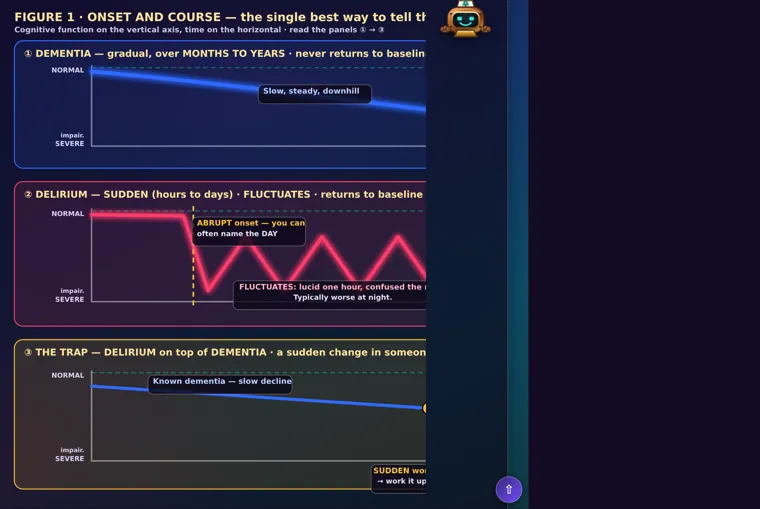
🖼️Dementia vs. DeliriumOpen the study page → 📚EncephalitisOpen the full study page →
📚EncephalitisOpen the full study page → 🖼️G.B. Guillain Barre syndromeOpen the study page →
🖼️G.B. Guillain Barre syndromeOpen the study page → 🖼️Head InjuryOpen the study page →
🖼️Head InjuryOpen the study page →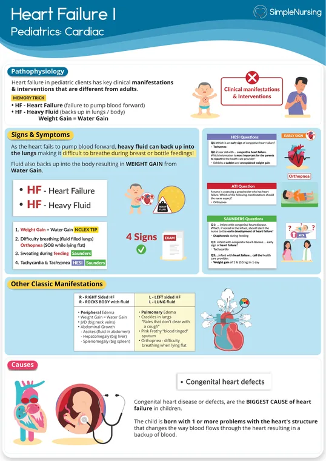
🖼️Heart Failure IOpens in Drive →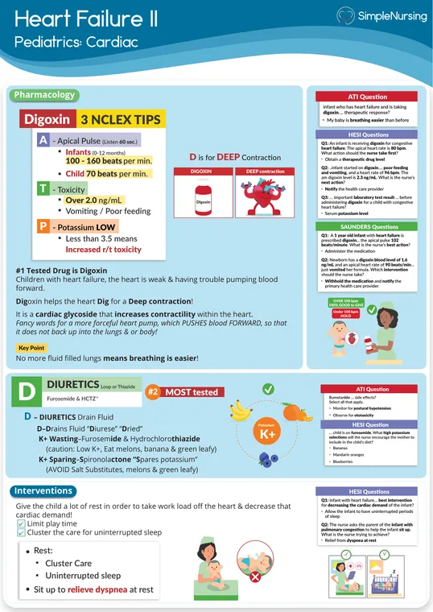
🖼️Heart Failure IIOpens in Drive → 🖼️M.G. Myasthenia GravisOpen the study page →
🖼️M.G. Myasthenia GravisOpen the study page → 🖼️MS Multiple SclerosisOpen the study page →
🖼️MS Multiple SclerosisOpen the study page → 🖼️MeningitisOpen the study page →
🖼️MeningitisOpen the study page → 🖼️Parkinson's DiseaseOpen the study page →
🖼️Parkinson's DiseaseOpen the study page → 📚Spinal Cord InjuryOpen the full study page →
📚Spinal Cord InjuryOpen the full study page →🎨 Illustrated pictures for Module 8, topic by topic

The spinal sympathetic and brainstem vagal routes differ. Cervical and high thoracic injuries can produce hypotension with relative or absolute bradycardia.
Read the picture

Vasodilation lowers systemic vascular resistance and venous return. Neurogenic shock and hemorrhage may coexist after trauma.
Read the picture

Narrow dorsal horns, broad ventral horns, lateral gray matter and the central canal are shown with anatomically consistent orientation. The diagram is schematic, not to scale.
Read the picture

Example values are illustrative. Do not diagnose neurogenic shock from heart rate or warm skin alone; exclude hemorrhage and other causes.
Read the picture

A simplified body map shows regions to assess. Skin and sweating patterns are variable and do not independently establish the cause of shock.
Read the picture

Neurogenic shock and spinal shock are distinct but may coexist after cord injury. Reflex recovery does not establish complete neurologic recovery.
Read the picture

A sudden rise from the person’s baseline may signal autonomic dysreflexia. Position upright, seek help, assess triggers and monitor BP frequently; medication may be required.
Read the picture

Neurogenic shock affects circulation; spinal shock describes depressed spinal function; autonomic dysreflexia is a sudden hypertensive response to a trigger, usually in injury at or above T6.
Read the picture
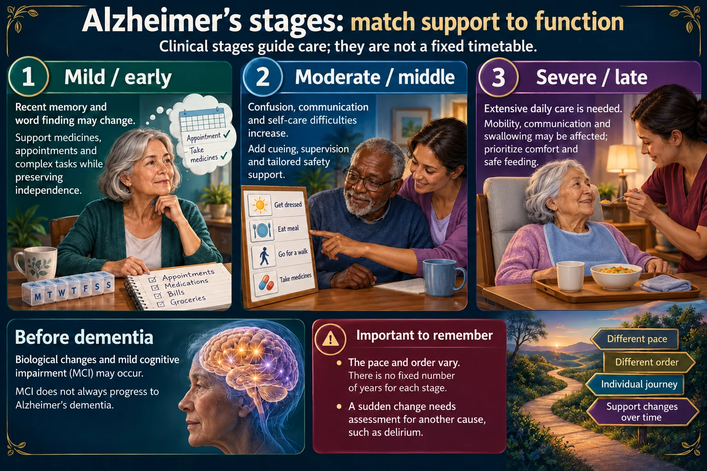
Mild, moderate and severe stages describe increasing care needs. Preclinical changes and mild cognitive impairment are distinct from dementia; the course varies.
Read the picture
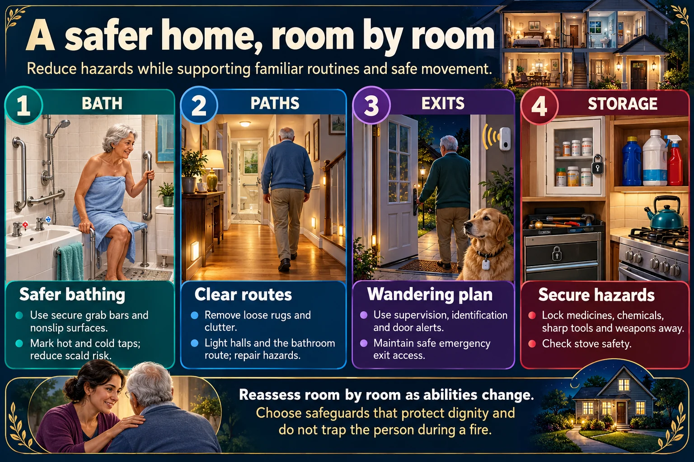
Check bathing, walking routes, wandering risk and hazardous storage. Reassess changing needs and keep emergency egress safe.
Read the picture
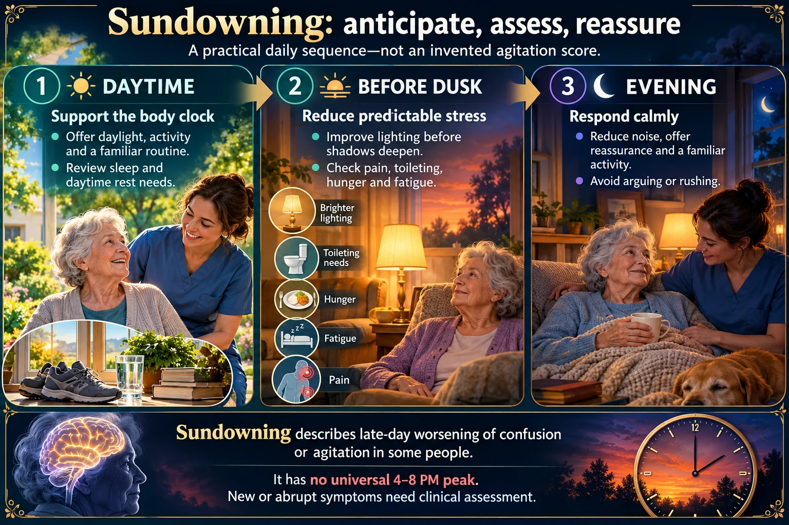
Late-day agitation varies by person. Improve environmental cues and assess unmet needs; seek evaluation for a sudden change from baseline.
Read the picture
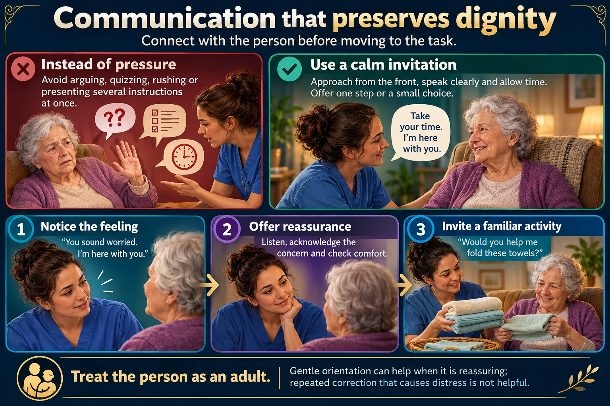
Use simple language, time to respond, reassurance and meaningful activity. Adapt communication to the person rather than following an inflexible script.
Read the picture
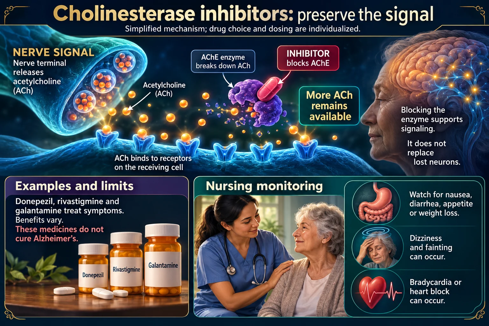
These drugs reduce acetylcholine breakdown to support remaining signaling. Monitor gastrointestinal effects, weight and cardiac symptoms. They do not regenerate neurons.
Read the picture

Food texture, liquid thickness and head position should follow the swallowing plan, not a universal rule.
Read the picture
Prescribed timing
Give medication consistently according to the plan.
Stronger function
Coordinate meals with the patient’s best strength.
Safer swallowing
Use the individualized swallowing assessment.
Pyridostigmine
Slows acetylcholine breakdown; it does not cure the autoimmune disorder.
Possible excess
Secretions, diarrhea, sweating, slow pulse and weakness can indicate cholinergic toxicity.
Escalation
Respiratory or bulbar deterioration needs urgent evaluation. The cause cannot be decided from weakness alone.

A negative Kernig or Brudzinski sign does not exclude meningitis. Do not delay urgent treatment for a perfect symptom pattern.
Read the picture
Meningeal inflammation
Affects the protective membranes around the CNS.
CSF and tissue response
Inflammation can impair neurologic function.
Urgent evaluation
Bacterial meningitis can deteriorate rapidly.
Recognize
Fever, headache, neck stiffness and altered mental status; the full pattern may be absent.
Infants
Poor feeding, irritability, reduced responsiveness or a bulging fontanelle may occur. Classic adult signs can be absent.
Nursing priorities
Prompt escalation, neurologic monitoring and prescribed antimicrobial treatment. Use organism-specific precautions.

Do not delay necessary antimicrobial treatment while waiting for imaging or lumbar puncture.
Read the picture
Clinical assessment
Recognize infection and neurologic deterioration.
Diagnostic plan
Blood tests, cultures and lumbar puncture when safe.
Targeted treatment
Use the organism and clinical course to guide therapy.
CSF
Cell count, glucose, protein and microbiologic testing help distinguish causes. Appearance alone is not diagnostic.
Before lumbar puncture
Assess contraindications. Brain imaging is needed for selected patients, not automatically for everyone.
After the procedure
Monitor symptoms, neurologic status and the puncture site; follow the procedural care plan.

A normal-looking scalp does not exclude significant brain injury.
Read the picture
Initial trauma
Impact, acceleration or penetrating injury damages tissue.
Secondary processes
Bleeding, edema, hypoxia or low perfusion can add injury.
Serial assessment
Trends reveal deterioration that a single exam can miss.
Assess
Consciousness, pupils, movement, speech and vital signs; compare with baseline and previous findings.
Protect
Support oxygenation and perfusion. Maintain appropriate spinal precautions until evaluated.
Escalate
Worsening headache, repeated vomiting, new weakness, unequal pupils or decreasing responsiveness needs urgent review.

Do not abruptly stop prescribed Parkinson’s medication. Sudden deterioration requires review.
Read the picture
Dopamine neuron loss
Affects circuits that regulate movement.
Altered motor control
Starting and scaling movement becomes harder.
Motor and nonmotor effects
Care extends beyond tremor.
Recognize
Bradykinesia, rigidity, resting tremor and gait changes; symptoms vary.
Medication timing
Give dopaminergic medication on schedule. Report wearing-off, involuntary movements and adverse effects.
Daily safety
Assess swallowing, falls, orthostatic symptoms, constipation, sleep and cognition.
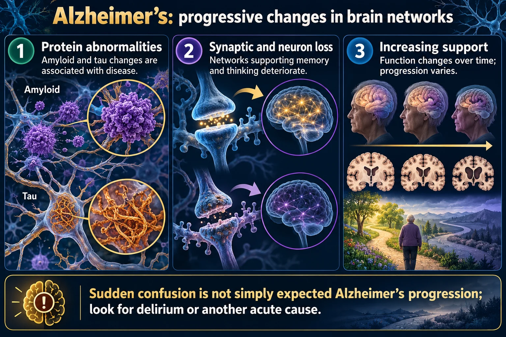
Sudden confusion is not simply expected Alzheimer’s progression; look for delirium or another acute cause.
Read the picture
Protein abnormalities
Amyloid and tau changes are associated with disease.
Synaptic and neuron loss
Networks supporting memory and thinking deteriorate.
Increasing support
Function changes over time; progression varies.
Recognize
Memory and other cognitive changes interfere with daily life. Evaluate potentially reversible contributors.
Care environment
Use familiar routines, clear cues, safe lighting, supported activities and caregiver respite.
Communication
Speak calmly, allow response time, offer simple choices and acknowledge feelings. Preserve adult dignity.
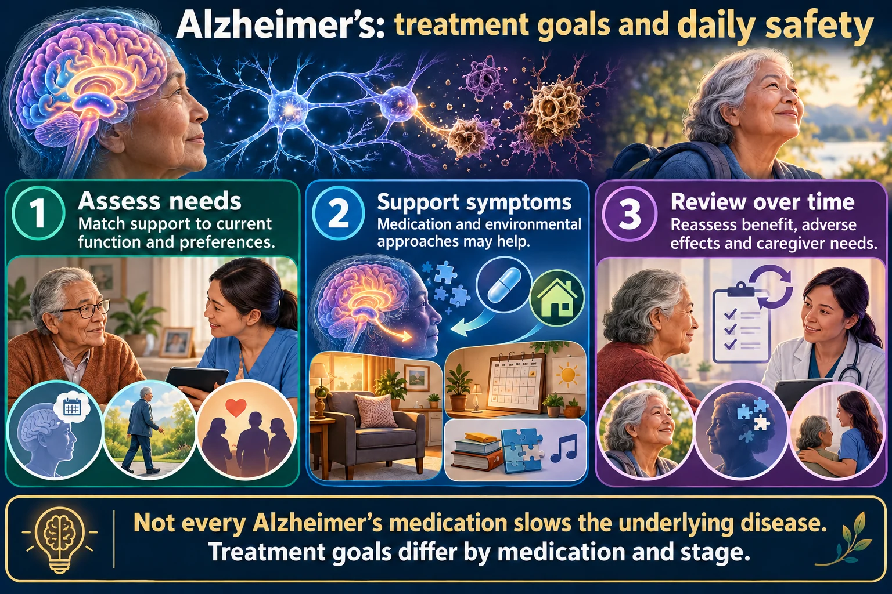
Not every Alzheimer’s medication slows the underlying disease. Treatment goals differ by medication and stage.
Read the picture
Assess needs
Match support to current function and preferences.
Support symptoms
Medication and environmental approaches may help.
Review over time
Reassess benefit, adverse effects and caregiver needs.
Symptom treatments
Cholinesterase inhibitors and memantine may help selected symptoms; they do not cure the disease.
Disease-modifying options
Selected people with early Alzheimer’s may qualify for anti-amyloid treatment with specialist monitoring.
Home safety
Reduce trip hazards; secure dangerous items; plan safe exits, identification and supervision without obstructing emergency escape.
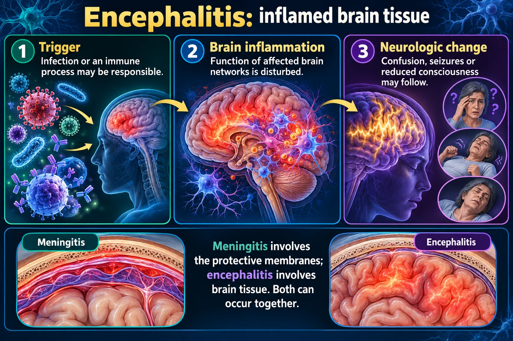
Meningitis involves the protective membranes; encephalitis involves brain tissue. Both can occur together.
Read the picture
Trigger
Infection or an immune process may be responsible.
Brain inflammation
Function of affected brain networks is disturbed.
Neurologic change
Confusion, seizures or reduced consciousness may follow.
Recognize
Fever or headache with altered behavior, cognition, seizures or focal findings requires urgent assessment.
Investigate
Imaging, CSF testing and EEG may help identify the cause and complications.
Support and treat
Protect breathing, monitor neurologic status and give cause-specific treatment promptly.
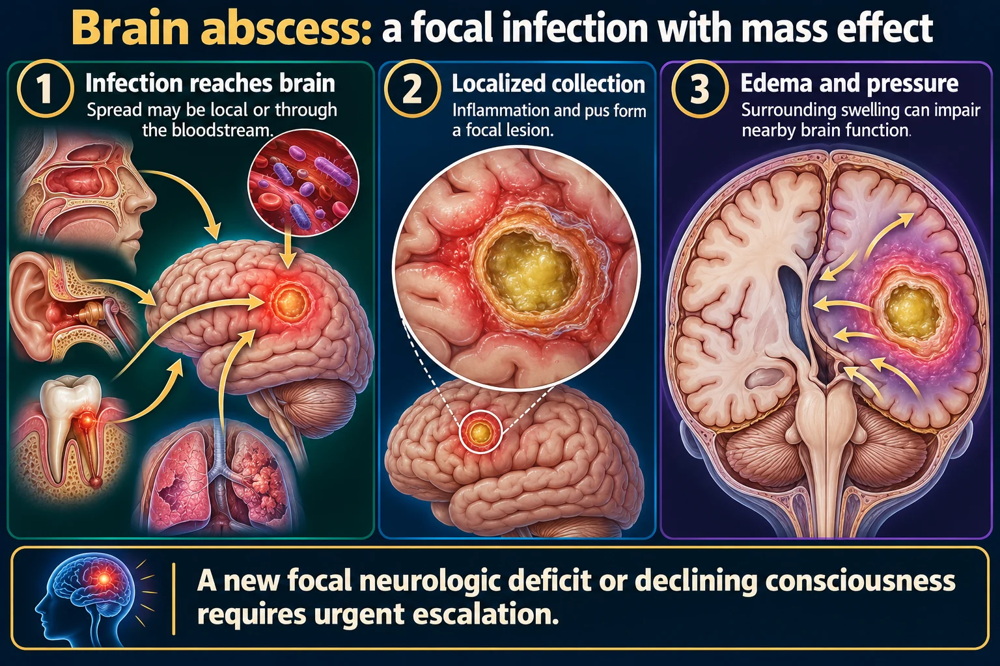
A new focal neurologic deficit or declining consciousness requires urgent escalation.
Read the picture
Infection reaches brain
Spread may be local or through the bloodstream.
Localized collection
Inflammation and pus form a focal lesion.
Edema and pressure
Surrounding swelling can impair nearby brain function.
Recognize
Headache, fever, seizures, focal deficits or altered consciousness; not all findings are present.
Assessment
Urgent imaging and specialist evaluation help define location and treatment.
Treatment
Antimicrobials and sometimes drainage; monitor for seizures and raised intracranial pressure.
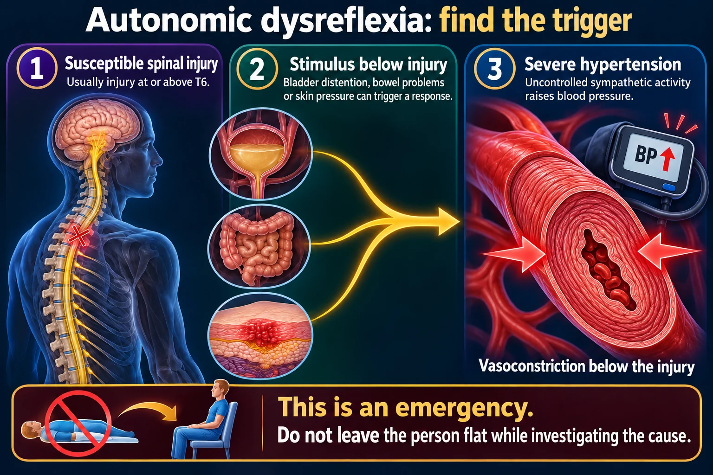
This is an emergency. Do not leave the person flat while investigating the cause.
Read the picture
Susceptible spinal injury
Usually injury at or above T6.
Stimulus below injury
Bladder distention, bowel problems or skin pressure can trigger a response.
Severe hypertension
Uncontrolled sympathetic activity raises blood pressure.
Recognize
Sudden headache, flushing or sweating above the lesion and a significant blood-pressure rise; pulse may vary.
Immediate response
Sit upright, loosen constrictive items, call for help and measure blood pressure frequently.
Remove the trigger
Check bladder drainage first and assess other triggers under protocol. Give ordered rapid treatment if needed.
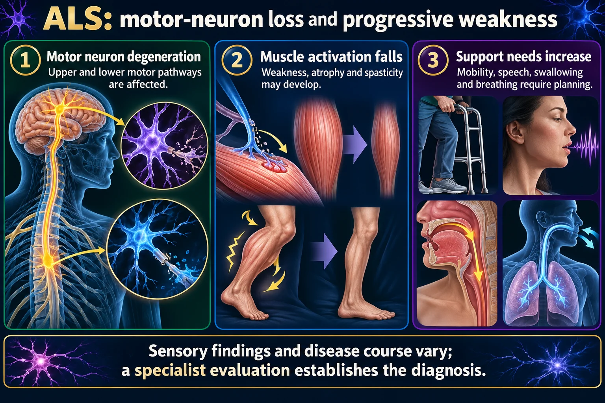
Sensory findings and disease course vary; a specialist evaluation establishes the diagnosis.
Read the picture
Motor neuron degeneration
Upper and lower motor pathways are affected.
Muscle activation falls
Weakness, atrophy and spasticity may develop.
Support needs increase
Mobility, speech, swallowing and breathing require planning.
Assess
Respiratory symptoms, nutrition, communication and functional changes.
Support
Assistive communication, mobility devices and respiratory/nutritional care preserve function and comfort.
Shared decisions
Discuss goals and future support early, while communication is accessible.
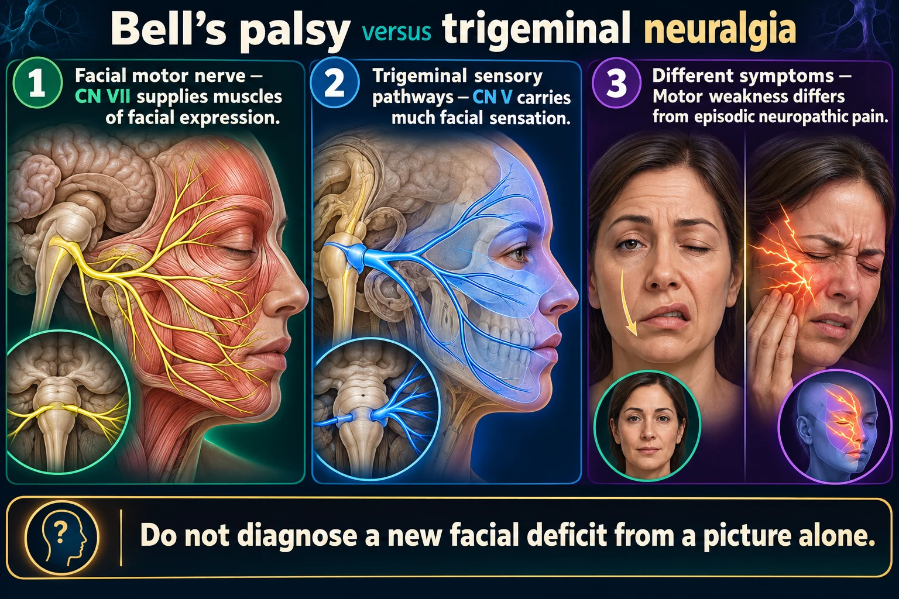
Do not diagnose a new facial deficit from a picture alone.
Read the picture
Facial motor nerve
CN VII supplies muscles of facial expression.
Trigeminal sensory pathways
CN V carries much facial sensation.
Different symptoms
Motor weakness differs from episodic neuropathic pain.
Bell’s palsy
Acute peripheral facial weakness may affect eye closure; protect the exposed cornea.
Trigeminal neuralgia
Brief severe facial pain can be triggered by touch, chewing or other stimuli.
Urgent distinction
New facial weakness requires evaluation for stroke and other causes.
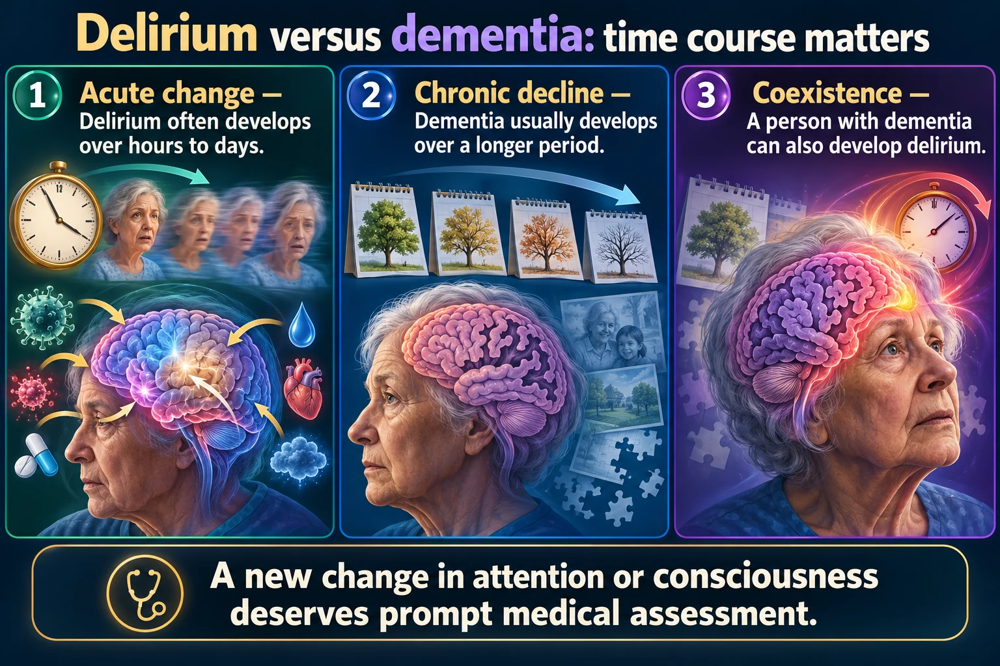
A new change in attention or consciousness deserves prompt medical assessment.
Read the picture
Acute change
Delirium often develops over hours to days.
Chronic decline
Dementia usually develops over a longer period.
Coexistence
A person with dementia can also develop delirium.
Delirium clues
Fluctuating attention, altered awareness and a change from baseline.
Search for causes
Infection, medication effects, pain, retention, metabolic problems and other triggers.
Support
Reorientation, sensory aids, sleep support, hydration and safe mobility as appropriate.

Bleeding can coexist with spinal injury; do not assume every low pressure is neurogenic shock.
Read the picture
Spinal cord injury
Disrupted autonomic pathways reduce sympathetic output.
Vasodilation
Vascular tone falls and blood pools.
Hypotension
Bradycardia may occur rather than compensatory tachycardia.
Assess
Pressure, pulse, temperature, perfusion and neurologic findings.
Support
Maintain spinal precautions and follow hemodynamic and respiratory treatment plans.
Distinguish
Neurogenic shock differs from spinal shock, which describes temporary loss of neurologic reflex activity.
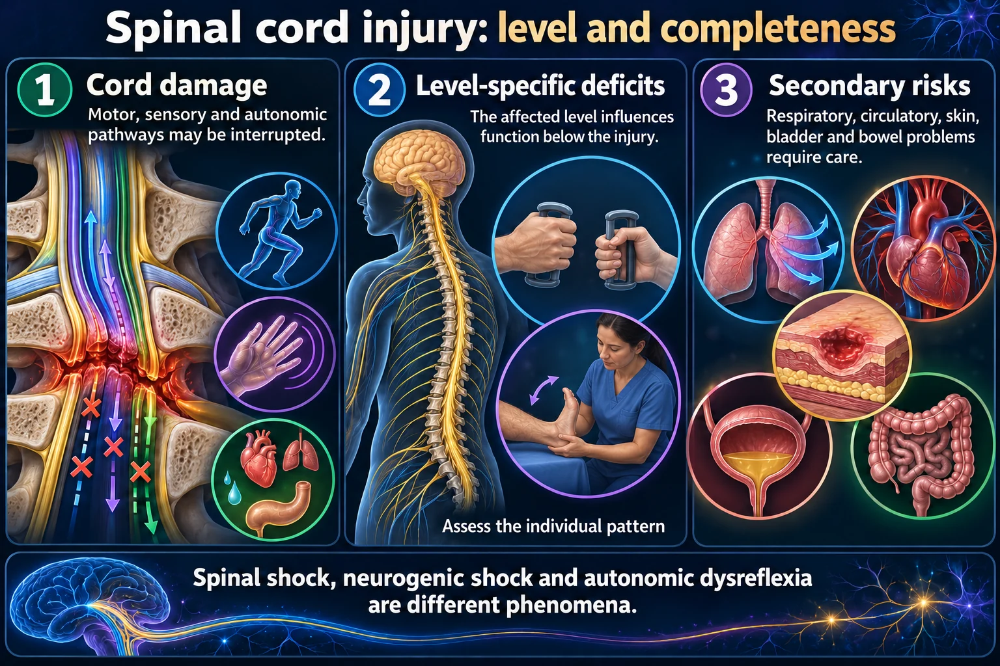
Spinal shock, neurogenic shock and autonomic dysreflexia are different phenomena.
Read the picture
Cord damage
Motor, sensory and autonomic pathways may be interrupted.
Level-specific deficits
The affected level influences function below the injury.
Secondary risks
Respiratory, circulatory, skin, bladder and bowel problems require care.
Acute priorities
Spinal protection, oxygenation, perfusion and serial neurologic assessment.
Ongoing care
Pressure prevention, mobility, elimination and rehabilitation planning.
Autonomic effects
Monitor for neurogenic shock early and autonomic dysreflexia when relevant.
📄 Simple Nursing handouts for this module — 6 of them, straight from your Drive.
🖼️ Visual references 35
Everything in the Visual library tagged NUR 258 · M8, grouped by type. Tap a group to open it; tap a card to open the file or page.
Infographics 17
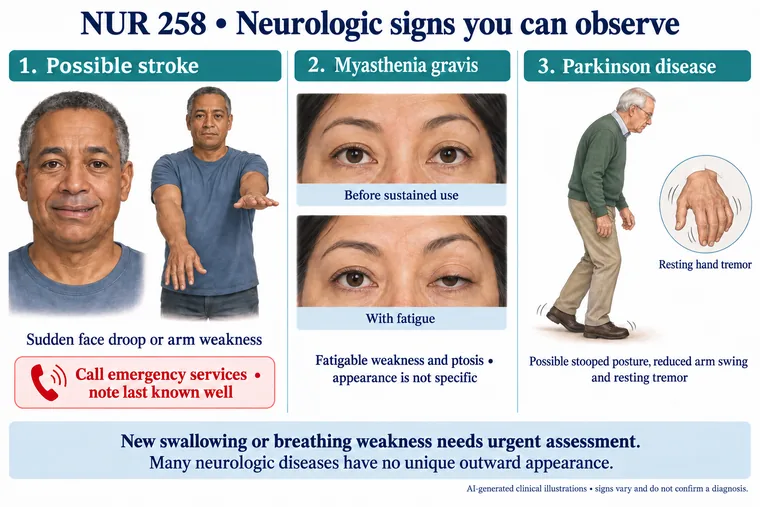
Neurologic signs you can observe🖼️ Infographic · With the notes →Preview here
Alzheimer'sExam 3 · Study page →Preview here
Preview here
Head InjuryExam 3 · Study page →Preview here
M.G. Myasthenia GravisExam 3 · Study page →Preview here
MeningitisExam 3 · Study page →Preview here
MS Multiple SclerosisExam 3 · Study page →Preview here
Parkinson's DiseaseExam 3 · Study page →Preview here
Spinal Cord InjuryExam 3 · Study page →Preview here
Autonomic DysreflexiaExam 3 · Study page →Preview here
EncephalitisExam 3 · Study page →Preview here
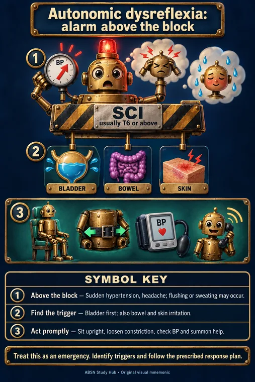
Autonomic dysreflexia: alarm above the block🖼️ Infographic · With the notes →Preview here
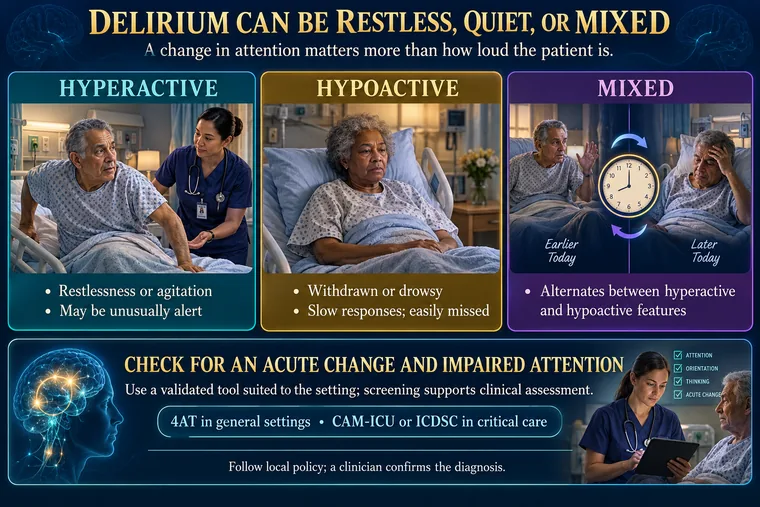
Delirium: restless, quiet or mixed🖼️ Infographic · With the notes →Preview here
Simple Nursing handouts 8
Study guides & PDFs 6
Preview here
Preview here
Preview here
Preview here
Preview here
PowerPoints 4
📋 Active Learning Templates 6
One per disorder. Every row is filled from that section of the ATI chapter — print it, cover the right, rebuild it.
📋 Parkinson's Disease6 parts
Filled from ATI chapter 8, row by row from that chapter’s own sections — 12 of 12 rows have content.
4 rows came from outside your ATI chapter — 4 cite a source, 0 are built from this page’s own notes. Each one is labeled.
🧭 What it isAlterations in Health (Diagnosis) · Health Promotion & Disease Prevention
Alterations in Health (Diagnosis)
- Parkinson's disease is a progressive movement disorder from dopamine loss in the basal ganglia, causing tremor, rigidity, slow movement, and postural instability; care focuses on boosting dopamine or blocking acetylcholine.
Health Promotion & Disease Prevention
Not in your ATI chapter — filled from NINDS, 2026.
- There is no known way to prevent Parkinson's disease, and its exact cause is still unclear.
- Exposure to certain pesticides and other pollutants has been linked to a greater risk of developing the disease.
- Regular exercise is associated with better flexibility, balance, and strength and may help slow symptom progression once diagnosed.
- A healthy diet is described as helpful for easing some Parkinson's symptoms, though it does not prevent the disease itself.
NINDS (NIH) · Parkinson's Disease · open the source →
👀 How it shows upAssessment — Risk Factors · Assessment — Expected Findings
Assessment — Risk Factors
- Onset usually starts around age
60; early onset can occur before age50. - More common in clients assigned male at birth.
- Having a genetic predisposition to Parkinson's disease increases the risk of onset.
- Exposure to environmental toxins and chemical solvents is a risk factor.
- Long-term use of antipsychotic medication raises risk of Parkinson's disease.
Assessment — Expected Findings
- Bradykinesia is slowed movement; akinesia means no movement at all.
- Posture is stooped with a slow, shuffling, propulsive gait pattern.
- Speech often becomes slow, monotonous, and hard to understand.
- A classic pill-rolling tremor appears in the fingers.
- Muscle rigidity ranges from mild resistance to total stiffness.
- Client presents with a flat, masklike facial expression.
- Autonomic symptoms include orthostatic hypotension, flushing, and diaphoresis.
- Chewing and swallowing difficulty often brings drooling and dysarthria.
🧪 How it is confirmedLaboratory Tests · Diagnostic Procedures
Laboratory Tests
- No definitive lab test exists; diagnosis is clinical, based on symptoms and ruling out other diseases.
- Stage I: tremor limited to only one limb (unilateral).
- Stage II: both sides get involved; walking and balance become harder.
- Stage II also shows a masklike face and shuffling gait.
- Stage III: movement slows significantly and posture becomes unstable.
Diagnostic Procedures
Not in your ATI chapter — filled from NINDS, 2026.
- There is no single definitive test for Parkinson's disease; diagnosis relies mainly on history and a neurologic exam looking for movement problems.
- A dopamine active transporter (DaT) scan or SPECT imaging can support the clinical diagnosis.
- Newer blood and other lab tests, such as the Syn-One and SAAmplify-alphaSYN tests, are being used to help confirm the diagnosis.
NINDS (NIH) · Parkinson's Disease · open the source →
🩺 What you doNursing Care · Medications · Therapeutic Procedures
Nursing Care
- Give PD medications at exact prescribed times to maintain steady symptom control.
- Consult SLP for swallowing risk; dietitian may order semisolid foods and thickened liquids.
- Weigh client weekly and offer smaller, more frequent meals sitting upright.
- Encourage exercise like yoga and regular ROM to preserve mobility.
- Teach the client to pause periodically while walking to prevent falls.
- Use facial exercises and slow, paused speech to support communication.
- Keep environment safe (remove throw rugs, use electric razor) and screen for depression or dementia.
- Refer to social worker or case manager as the disease advances for financial and care planning.
- COMT inhibitors can cause dyskinesia with levodopa; dark urine is an expected, harmless finding.
Medications
- PD medications can take several weeks before symptoms improve.
- Maintaining steady therapeutic levels of combination drug regimens is essential.
- Levodopa converts to dopamine in the brain to raise basal ganglia dopamine levels.
- Combining levodopa with carbidopa lowers peripheral breakdown, allowing a smaller effective dose.
- Dosage and timing must be adjusted for tolerance to avoid poor-mobility periods.
- Dopamine agonists (bromocriptine, ropinirole, pramipexole) stimulate dopamine release directly.
- Dopamine agonists may be paired with a dopaminergic for greater benefit.
- Anticholinergics (benztropine, trihexyphenidyl) help control tremor and rigidity.
Therapeutic Procedures
- Deep brain stimulation implants an electrode in the thalamus with a chest pulse generator.
- DBS reduces tremor and involuntary movement, potentially lowering medication needs.
- Watch for infection, brain hemorrhage, or stroke-like symptoms after DBS.
💬 Around the patientClient Education · Interprofessional Care
Client Education
Not in your ATI chapter — filled from NINDS, 2026.
- Support groups are recommended to help patients and families learn to cope with the effects of Parkinson's disease.
- Individual or family counseling can help patients find ways to live as well as possible with the disease.
- Many people with Parkinson's disease are able to keep working full- or part-time, especially early in the disease course.
NINDS (NIH) · Parkinson's Disease · open the source →
Interprofessional Care
- PD requires long-term multidisciplinary care as the disease progresses.
- Later stages need speech, occupational, and physical therapy plus social work support.
⚠️ What goes wrongComplications
Complications
Not in your ATI chapter — filled from NINDS, 2026.
- Swallowing and chewing difficulty can develop in later-stage disease and raises the risk of choking.
- Postural instability and balance problems increase the risk of falls as the disease advances.
- Some patients develop thinking and memory problems, including dementia, as Parkinson's progresses.
- Serious late complications listed include choking, aspiration pneumonia, and falls.
NINDS (NIH) · Parkinson's Disease · open the source →
📋 Delirium and Dementia6 parts
🖼️ InfographicsDementia vs. Delirium
Filled from ATI chapter 9, row by row from that chapter’s own sections — 12 of 12 rows have content.
1 rows came from outside your ATI chapter — 1 cite a source, 0 are built from this page’s own notes. Each one is labeled.
🧭 What it isAlterations in Health (Diagnosis) · Health Promotion & Disease Prevention
Alterations in Health (Diagnosis)
- Chapter covers delirium (acute, reversible confusion) and Alzheimer's disease (progressive dementia), including risk factors, staged progression, diagnostic workup, medications, safety-focused nursing care, and home safety teaching for caregivers.
Health Promotion & Disease Prevention
- An active lifestyle and Mediterranean diet may support brain health.
- Managing chronic illnesses well may help reduce dementia risk long-term.
👀 How it shows upAssessment — Risk Factors · Assessment — Expected Findings
Assessment — Risk Factors
- Delirium risk rises in critical care settings and with acute or chronic illness.
- Anticholinergics, opioids, and antipsychotic drugs can all trigger delirium.
- Infections, alcohol toxicity, and head trauma are common delirium triggers.
- Insomnia, sudden environment changes, and sensory extremes can raise delirium risk.
- Advanced age is a leading risk factor for Alzheimer's disease.
- Family history of AD or Down syndrome raises Alzheimer's risk.
- Genetic predisposition, including the apolipoprotein E gene, increases AD risk.
- Environmental exposures like herpes virus, metals, or toxic waste are linked to AD.
Assessment — Expected Findings
- No apparent symptoms stage shows normal function with no memory problems.
- Stage 2 forgetfulness means misplacing everyday items like glasses or keys.
- Stage 3 mild cognitive decline shows up as testing-detected memory or focus problems.
- Stage 4 brings obvious memory loss and trouble managing finances or planning.
- Stage 4 also causes social withdrawal and difficulty with complex mental math.
- Stage 5 brings decreased planning ability and memory loss relatives notice.
- Stage 5 includes a shorter attention span and trouble recalling names or words.
- In stage 5, clients can get lost while driving and struggle socially.
🧪 How it is confirmedLaboratory Tests · Diagnostic Procedures
Laboratory Tests
- No single lab test can confirm an Alzheimer's disease diagnosis.
- Labs mainly rule out other causes: CBC, chemistry panel, B12, thyroid, CSF studies.
- Apolipoprotein genetic testing shows increased AD risk but isn't diagnostic alone.
Diagnostic Procedures
- No definitive test exists except a brain tissue exam after death.
- MRI, CT, PET, and EEG help rule out other causes of symptoms.
- Lumbar puncture checking low CSF soluble beta protein precursor supports an AD diagnosis.
🩺 What you doNursing Care · Medications · Therapeutic Procedures
Nursing Care
- Remove contributing causes of delirium and reorient the client frequently.
- Use a calm voice and calming music to ease delirium agitation.
- Mild Alzheimer's brings memory lapses, misplaced items, and trouble concentrating while still managing ADLs.
- Moderate Alzheimer's brings trouble managing money, wandering, incontinence, and personality changes.
- Keep the environment safe: monitor closely, block stairs, elevators, and exits, remove hazards.
- Provide frequent walks to help reduce wandering behavior.
- Keep a structured routine and introduce changes gradually to reduce confusion.
- Use short directions, repetition, and a calendar to support orientation.
- In later stages, use validation therapy: acknowledge feelings, don't argue with the client.
Medications
- Dementia medications mainly target behavioral symptoms like anxiety, agitation, and depression.
- Options include antipsychotics, antidepressants, and anxiolytics, monitored closely for adverse effects.
- AD-specific medications only slow progression temporarily and don't work for everyone.
- If one medication fails to help, providers try switching to another agent.
- Donepezil blocks acetylcholine breakdown, increasing available acetylcholine for nerve signaling.
- Memantine blocks nerve damage from excess glutamate and may pair with donepezil.
- Cholinesterase inhibitors help slow the disease's progression over time.
- Pimavanserin is an antipsychotic used for dementia-related psychosis.
Therapeutic Procedures
- Estrogen therapy may lower AD risk but doesn't help existing dementia.
- Ginkgo biloba may boost memory or circulation but carries interaction risks; report use to providers.
- Bedtime massage can ease stress and improve sleep.
- Lavender or bergamot essential oils can promote relaxation and better sleep.
💬 Around the patientClient Education · Interprofessional Care
Client Education
- Connect families to social services, the Alzheimer's Association, and support groups.
- Teach caregivers about the disease course, care methods, medications, and home changes.
- Explain that late-stage disease can bring new seizure activity.
- Offer strategies to help reduce caregiver stress and burnout.
- Remove scatter rugs and clear clutter to help prevent falls.
- Install door locks and alarms the client can't easily open.
- Lock the water heater and thermostat to keep water temperature safe.
Interprofessional Care
- Encourage early legal planning for advance directives and power of attorney.
- Refer families to social services for day care or long-term care options.
- Involve physical therapy to build an individualized exercise plan.
- Connect families with the Alzheimer's Association for support and respite care.
- Review available home care and community resources as the disease progresses.
⚠️ What goes wrongComplications
Complications
Not in your ATI chapter — filled from NIA, 2024.
- In late-stage dementia, loss of the ability to chew and swallow safely raises the risk of food entering the lungs and causing pneumonia.
- Staying in one position too long in advanced dementia commonly leads to skin breakdown and pressure sores.
- Reduced appetite and interest in food in late-stage dementia can lead to significant weight loss and malnutrition.
National Institute on Aging (NIH) · Care in the Last Stages of Alzheimer's Disease · open the source →
📋 Brain Tumors6 parts
Filled from ATI chapter 10, row by row from that chapter’s own sections — 12 of 12 rows have content.
3 rows came from outside your ATI chapter — 3 cite a source, 0 are built from this page’s own notes. Each one is labeled.
🧭 What it isAlterations in Health (Diagnosis) · Health Promotion & Disease Prevention
Alterations in Health (Diagnosis)
- Covers brain tumor classification (benign vs. malignant, supratentorial vs. infratentorial), risk factors, location-specific findings, diagnostic workup, medication management, surgical care, and pituitary-related complications like SIADH and diabetes insipidus.
Health Promotion & Disease Prevention
Not in your ATI chapter — filled from ACS, 2026.
- There is no known way to prevent most brain and spinal cord tumors.
- The only established environmental risk factor is exposure to ionizing radiation, most often from prior radiation therapy to the head.
- Radiation-related tumors typically appear 10 to 15 years after the original exposure.
- Inherited conditions such as neurofibromatosis, tuberous sclerosis, and Li-Fraumeni syndrome raise risk but are not preventable.
American Cancer Society · Adult Brain Tumor Causes, Risk Factors, and Prevention · open the source →
👀 How it shows upAssessment — Risk Factors · Assessment — Expected Findings
Assessment — Risk Factors
- Genetics and environmental agents may contribute to brain tumor risk.
- Exposure to ionizing radiation or electromagnetic fields raises risk.
- Previous head injury is a possible risk factor.
- A history of neurofibromatosis or being immunocompromised raises tumor risk.
Assessment — Expected Findings
- Dysarthria, dysphagia, and vertigo are common tumor-related findings.
- Positive Romberg and Babinski signs can occur with brain tumors.
- Hemiparesis and cranial nerve dysfunction, like impaired gag or blink reflex, may appear.
- Papilledema is a sign of rising intracranial pressure.
- Supratentorial tumors cause headache worse on waking that eases through the day.
- Supratentorial tumors bring visual field changes, seizures, and loss of voluntary movement.
- Supratentorial tumors can alter memory, language, and personality, and cause nausea or paralysis.
- Infratentorial tumors bring hearing loss, tinnitus, and visual changes.
🧪 How it is confirmedLaboratory Tests · Diagnostic Procedures
Laboratory Tests
- CBC and differential rule out anemia or malnutrition.
- Blood alcohol and toxicology screening rules out other causes of symptoms.
- TB and HIV screening are done when social history warrants.
Diagnostic Procedures
- X-ray, CT, MRI, brain scan, PET, and cerebral angiography define tumor size and location.
- Lumbar puncture and EEG add data but risk harm if ICP is already high.
- Cerebral biopsy identifies tumor cell type via CT- or MRI-guided tissue sampling.
- Biopsy recovers faster than open surgery but can't debulk the tumor and may misdiagnose it.
- Continue antiepileptic medications before biopsy to help prevent seizures.
🩺 What you doNursing Care · Medications · Therapeutic Procedures
Nursing Care
- Maintain airway with oxygen and lung sound monitoring as needed.
- Watch closely for LOC changes, new deficits, or seizure activity.
- Support safe mobility with transfer help and assistive devices.
- Implement seizure precautions for all clients with brain tumors.
- Administer prescribed medications as ordered to manage symptoms and prevent complications.
Medications
- Non-opioid analgesics treat headache; opioids are avoided since they blunt LOC.
- Corticosteroids quickly reduce cerebral edema and improve headache or LOC changes.
- Chronic corticosteroids control edema from ongoing tumor presence or treatment.
- Osmotic diuretics lower brain fluid content to reduce intracranial pressure.
- Anticonvulsants suppress neuronal activity to prevent or control seizures.
- Different antiepileptic classes each target specific seizure types.
- H2-antagonists reduce stomach acid to prevent stress ulcers during acute treatment.
- Antiemetics treat nausea from raised ICP, tumor site, or treatment effects.
Therapeutic Procedures
- Craniotomy removes all or part of the tumor through a skull opening.
- Preop: answer written questions and encourage the partner's presence at discussions.
- Stop aspirin at least
72 hrbefore surgery. - Stop alcohol, tobacco, anticoagulant, and NSAID use for
5 daysbefore the operation. - Complete a living will and health care power of attorney before surgery.
- Postop: monitor vitals and neuro status closely, including Glasgow Coma Scale checks.
💬 Around the patientClient Education · Interprofessional Care
Client Education
Not in your ATI chapter — filled from ACS, 2024.
- Family should be taught to protect the airway during a seizure by loosening tight clothing and turning the person onto their side.
- Restraining a person during a seizure should be avoided; the priority is clearing the area of hazards.
- Getting enough sleep and taking antiseizure medication exactly as prescribed are stressed as key ways to prevent breakthrough seizures at home.
- Missed doses of antiseizure medication are named as one of the most common seizure triggers.
American Cancer Society · Seizures (Cancer-related Side Effects) · open the source →
Interprofessional Care
- Referrals include social services, support groups, and PT/speech/OT therapy.
- Treatment options: steroids, surgery, chemo, radiation, radiosurgery, or clinical trials.
- Chemo or radiation can shrink a tumor before surgery or prevent recurrence after.
- Benign tumor surgery is often curative, though regrowth is possible.
- Some benign tumors carry high mortality risk due to their location alone.
⚠️ What goes wrongComplications
Complications
Not in your ATI chapter — filled from ACS, 2026.
- A tumor can raise pressure inside the skull through its own growth, surrounding swelling, or blocked CSF flow.
- Headaches that steadily worsen over time occur in about half of people with a brain tumor.
- Rising intracranial pressure can cause nausea, vomiting, drowsiness, and in severe cases coma.
- Balance problems, seizures, and personality or behavior changes are also linked to increased pressure from a tumor.
American Cancer Society · Signs and Symptoms of Brain Tumors in Adults · open the source →
📋 Multiple Sclerosis6 parts
Filled from ATI chapter 11, row by row from that chapter’s own sections — 12 of 12 rows have content.
2 rows came from outside your ATI chapter — 2 cite a source, 0 are built from this page’s own notes. Each one is labeled.
🧭 What it isAlterations in Health (Diagnosis) · Health Promotion & Disease Prevention
Alterations in Health (Diagnosis)
- MS is a chronic autoimmune disease that demyelinates CNS nerve fibers, causing irreversible plaques and progressive motor, sensory, and cognitive decline. Four subtypes vary in relapse and remission patterns; no cure exists.
Health Promotion & Disease Prevention
Not in your ATI chapter — filled from NINDS, 2025.
- People who get more sun exposure and have higher vitamin D levels appear less likely to develop MS.
- Smoking raises MS risk and is linked to a more aggressive disease course with more brain lesions and greater brain shrinkage.
- Epstein-Barr virus infection is the virus most consistently linked to later development of MS, though most infected people never develop it.
- Being infected with Epstein-Barr virus in childhood is associated with lower MS risk than infection during the teen or adult years.
NINDS (NIH) · Multiple Sclerosis (MS) · open the source →
👀 How it shows upAssessment — Risk Factors · Assessment — Expected Findings
Assessment — Risk Factors
- Age 20-50 years old at onset, though timing varies by client.
- Female sex assigned at birth raises risk 2 to 3 times.
- Genetic link: risk rises with an affected first-degree relative.
- Relapses can be triggered by viral or infectious illness.
- Living in a cold climate is linked to higher relapse risk.
- A physical injury can trigger an MS relapse.
- Emotional stress and pregnancy can each trigger an MS relapse.
- Fatigue and overexertion can each trigger an MS relapse.
Assessment — Expected Findings
- Fatigue, pain, and impaired coordination are common early findings.
- Ataxia and intentional tremors can affect movement and balance.
- Cognitive changes include memory loss and impaired judgment.
- Sensory changes such as paresthesia and vertigo are common findings.
- Visual problems include diplopia, peripheral vision changes, and blurred acuity.
- Visual problems also include scotomas, temporary blindness, and nystagmus.
- Dysphagia and dysarthria can impair swallowing and speech.
- Motor findings include muscle spasticity and generalized weakness.
🧪 How it is confirmedLaboratory Tests · Diagnostic Procedures
Laboratory Tests
- CSF analysis shows elevated protein and slightly increased WBCs.
- CSF electrophoresis shows increased lymphocytes and increased IgG.
Diagnostic Procedures
- MRI is the most diagnostic test, showing brain and spinal plaques.
- Evoked potential testing detects optic nerve transmission deficits.
- Urodynamic testing is used to evaluate bladder function status.
🩺 What you doNursing Care · Medications · Therapeutic Procedures
Nursing Care
- Monitor visual acuity, speech patterns, swallowing, and activity tolerance.
- Discuss coping strategies and connect the client to support systems.
- Encourage fluids and teach self-catheterization or Credé's maneuver for bladder care.
- Establish a bladder-voiding schedule, starting every
1.5 to 2 hr, then lengthen. - Monitor cognitive changes; reorient client and keep items in routine spots.
- Encourage exercise and stretching, but avoid fatigue and overheating.
- Group care activities together and schedule rest periods to conserve energy.
- Promote a safe home and hospital setting; use assistive devices as needed.
- For diplopia, alternate an eye patch between eyes and teach scanning.
Medications
- Disease-modifying therapies slow MS progression and reduce relapse frequency and length.
- Interferon beta-1a/1b injections lower relapse rate; start early in the disease course.
- Watch for flu-like reactions with interferon; rotate injection sites.
- Glatiramer acetate is another injectable agent, given subcutaneously.
- Teriflunomide, fingolimod, and dimethyl fumarate are oral choices if injections cause reactions.
- These oral agents can cause fetal harm during pregnancy.
- Mitoxantrone IV infusion carries a risk of cardiotoxicity and leukemia.
- Natalizumab IV infusion raises the risk of opportunistic infection.
Therapeutic Procedures
Not in your ATI chapter — filled from NINDS, 2025.
- MRI of the brain and spinal cord is used to look for the lesions characteristic of MS.
- In most cases the diagnosis is made by combining a patient's symptoms with the characteristic MRI findings rather than a single test.
- Evoked potential testing uses scalp electrodes and painless electrical signals to measure how quickly the nervous system responds to stimulation.
NINDS (NIH) · Multiple Sclerosis (MS) · open the source →
💬 Around the patientClient Education · Interprofessional Care
Client Education
- Report new weakness or jaundice to the provider right away.
- Never stop baclofen abruptly; taper it as directed.
- Carbamazepine, an anticonvulsant, is used to manage paresthesia.
- Docusate sodium, a stool softener, helps prevent constipation.
- Oxybutynin, an anticholinergic, is used for bladder dysfunction.
- Amantadine combats fatigue that interferes with daily activities.
- Dalfampridine is used to improve a client's walking speed.
Interprofessional Care
- Care team spans neurology, ophthalmology, speech, PT, OT, mental health, case management, and social work.
- Connect clients to local MS support groups and the National MS Society.
- OT/PT can assess home safety and recommend adaptive mobility devices.
- Speech therapy referral supports clients with dysarthria and dysphagia.
- Teach clients to avoid overexertion, stress, temperature extremes, and sick contacts.
⚠️ What goes wrongComplications
Complications
- Watch for complications such as urinary tract infection, constipation, and pneumonia.
📋 Head Injury6 parts
🖼️ InfographicsHead Injury
Filled from ATI chapter 15, row by row from that chapter’s own sections — 12 of 12 rows have content.
1 rows came from outside your ATI chapter — 1 cite a source, 0 are built from this page’s own notes. Each one is labeled.
🧭 What it isAlterations in Health (Diagnosis) · Health Promotion & Disease Prevention
Alterations in Health (Diagnosis)
- Head injuries are classified as open or closed and rated mild to severe by Glasgow Coma Scale score. Types include concussion, contusion, diffuse axonal injury, and intracranial hemorrhage, with skull fracture and cervical spine injury as key concerns.
Health Promotion & Disease Prevention
- Wear helmets for skateboarding, biking, motorcycling, skiing, and contact sports.
- Always wear a seatbelt when driving or riding in a vehicle.
- Avoid speeding and never drive under the influence.
- Firearm owners should always keep all firearms securely locked.
- Avoid riding unrestrained in the open bed of a pickup truck.
- Fall-prevention programs matter most for adults over age 65.
👀 How it shows upAssessment — Risk Factors · Assessment — Expected Findings
Assessment — Risk Factors
- Motor vehicle or motorcycle crashes are a leading cause.
- Alcohol or illicit substance use raises injury risk.
- Sports-related trauma is a common cause of head injury.
- Assault is another possible cause of head injury.
- Gunshot wounds are a cause of head injury.
- Falls are a common cause, especially in older adults.
Assessment — Expected Findings
- Amnesia about events before or after the injury is common.
- The length of unconsciousness helps indicate how severe the injury is.
- CSF leaking from the nose or ears suggests a basilar skull fracture.
- Check for a halo sign: a clear ring around bloody drainage on gauze.
- Increased ICP: severe headache, nausea, vomiting, restlessness, or irritability.
- Increased ICP: worsening level of consciousness and cranial nerve dysfunction.
- Increased ICP: dilated or pinpoint pupils that do not react.
- Increased ICP: abnormal breathing patterns such as Cheyne-Stokes or apnea.
🧪 How it is confirmedLaboratory Tests · Diagnostic Procedures
Laboratory Tests
- Head injury labs include ABGs, CBC with differential, and blood glucose.
- Electrolytes, plus blood and urine osmolarity, are also monitored.
- A toxicology screen is part of the diagnostic workup.
- Anti-seizure medication blood levels are monitored during treatment.
Diagnostic Procedures
- Cervical spine films rule out a cervical spine injury.
- CT or MRI of the head or neck assesses injury extent.
- Skull x-ray can help identify any skull fractures present.
- ICP monitor readings allow calculation of cerebral perfusion pressure.
🩺 What you doNursing Care · Medications · Therapeutic Procedures
Nursing Care
- Respiratory status is the priority; injury from hypoxia can begin in
3 to 5 min. - GCS:
13 to 15= mild,9 to 12= moderate, less than8= severe. - ICP is normally
10 to 15 mm Hg. - Elevate the head of bed at least 30° to lower ICP.
- Avoid extreme neck flexion, extension, or rotation; keep the head midline.
- Give oxygen to keep PaO2 above
60 mm Hg; maintain a patent airway. - Give stool softeners and avoid the Valsalva maneuver to prevent ICP spikes.
- Maintain cervical spine stability until an x-ray clears the spine.
- Report any CSF drainage from the nose or ears immediately.
Medications
- Mannitol, an osmotic diuretic, pulls fluid from the brain into the blood to treat cerebral edema.
- Give mannitol IV; insert an indwelling catheter to track fluid and renal status.
- Monitor electrolytes and osmolality closely during mannitol therapy.
- Barbiturate coma (pentobarbital, thiopental) lowers cellular metabolic demand to control ICP.
- Barbiturate coma requires mechanical ventilation plus cardiac and ICP monitoring.
- Phenytoin prevents seizures prophylactically; dosing is based on therapeutic blood levels.
- Morphine or fentanyl treat pain and restlessness but risk respiratory depression if unventilated.
- Give naloxone as the reversal agent if opioid overmedication occurs.
Therapeutic Procedures
- Craniotomy removes nonviable tissue, hematomas, or tumors via a burr hole or bone flap.
- Surgical approaches include supratentorial, infratentorial, and transsphenoidal routes.
- Burr holes help assess cerebral swelling and ventricle size or position.
- Risks include severe neurologic impairment, infection, seizures, and death.
💬 Around the patientClient Education · Interprofessional Care
Client Education
- Brain herniation surgery decisions are made emergently during a crisis.
- Social work and pastoral care can support families during a crisis.
- Watch for severe headache, rapid decline in consciousness, and signs of rising ICP.
- Subdural and epidural hematomas typically require surgical removal to treat.
- Mannitol can trigger pulmonary edema that mimics cardiac edema without heart involvement.
- This mannitol-related pulmonary edema is a life-threatening emergency; survival is rare.
- Arginine vasopressin deficiency, formerly called central diabetes insipidus, is a possible complication.
Interprofessional Care
- Refer to PT, OT, recreational, and speech therapy for deficits from brain injury.
- Involve social services or case management for community and school resources.
- Rehab facilities help speed recovery and reintegration into daily life.
⚠️ What goes wrongComplications
Complications
Not in your ATI chapter — filled from StatPearls, 2023.
- About 90 percent of concussion symptoms resolve within 10 to 14 days.
- Roughly 15 percent of patients with a mild traumatic brain injury go on to develop postconcussive syndrome.
- About 10 to 15 percent of patients still have symptoms a year later, though this figure may be overestimated due to reporting bias.
- Being female, having had prior concussions, an intracranial abnormality on imaging, or older age are linked to a higher chance of prolonged symptoms.
StatPearls (NCBI Bookshelf) · Postconcussive Syndrome · open the source →
📋 Spinal Cord Injury6 parts
Filled from ATI chapter 17, row by row from that chapter’s own sections — 12 of 12 rows have content.
1 rows came from outside your ATI chapter — 1 cite a source, 0 are built from this page’s own notes. Each one is labeled.
🧭 What it isAlterations in Health (Diagnosis) · Health Promotion & Disease Prevention
Alterations in Health (Diagnosis)
- Spinal cord injury causes loss of motor, sensory, reflex, and elimination control below the injury level. Cervical injuries cause quadriplegia; injuries below T1 cause paraplegia. About
17,000new U.S. cases occur yearly, average age43.
Health Promotion & Disease Prevention
- Wear helmets and protective gear for skating, biking, skiing, and football.
- Always wear a seatbelt when driving or riding in a car.
- Avoid speeding and never drive under the influence.
- Secure windows and use safety gates around hazardous areas.
- Never dive into water of unknown or shallow depth; mark pool depth clearly.
- Help prevent falls in older adults with handrails and clear walkways.
👀 How it shows upAssessment — Risk Factors · Assessment — Expected Findings
Assessment — Risk Factors
- High-risk or extreme sports raise the chance of spinal cord injury.
- Motor vehicle accidents are a leading cause of spinal cord injury.
- Impact sports such as football or diving increase risk.
- Violence, including gunshot or knife wounds, can cause spinal cord injury.
- Substance use is also a notable risk factor.
- Metastatic cancer or spinal arthritis can raise injury risk.
- Falls are a common cause, especially in older adults.
Assessment — Expected Findings
- Loss of sensation follows a dermatome pattern below the injury level.
- Neck or back pain is a commonly reported finding.
- Client cannot feel light touch, sharp versus dull, or hot versus cold.
- Deep tendon reflexes are absent below the level of injury.
- Muscles below the level of injury often become flaccid.
- Hypotension can worsen when the client sits upright.
- Shallow respirations can occur, especially with high-level lesions.
- Spinal shock causes temporary loss of reflex and autonomic function for days to weeks.
🧪 How it is confirmedLaboratory Tests · Diagnostic Procedures
Laboratory Tests
- Urinalysis, hemoglobin, ABGs, and CBC screen for hidden internal bleeding.
- These labs also flag respiratory compromise linked to phrenic nerve involvement.
Diagnostic Procedures
- X-ray, MRI, and CT scans locate the extent of damage, blood, and bone fragments.
🩺 What you doNursing Care · Medications · Therapeutic Procedures
Nursing Care
- Respiratory status is the top priority; injury at or above C4 threatens spontaneous breathing.
- Neurogenic shock can start within
24 hrof injury, causing severe hypotension. - Upper motor neuron injury, above L1-L2, causes spastic tone once shock resolves.
- Lower motor neuron injury, below L1-L2, causes flaccid paralysis instead.
- Move clients to a wheelchair gradually; watch for postural-hypotension dizziness.
- Reposition every
2 hrin bed, every1 hrin a wheelchair, to protect skin. - Spastic bladder: manage with a condom catheter or by stimulating the voiding reflex.
- Flaccid bladder: manage with intermittent catheterization or the Credé method.
- For autonomic dysreflexia, sit the client upright immediately to lower blood pressure.
Medications
- Norepinephrine or dopamine treat hypotension during neurogenic shock.
- Atropine is used to treat bradycardia linked to neurogenic shock.
- Dextran, a plasma expander, treats spinal-shock hypotension; watch for fluid overload.
- Baclofen or dantrolene manage severe spasticity; watch for drowsiness and weakness.
- Intrathecal baclofen lessens sedative side effects for severe spasticity cases.
- Bethanechol lowers bladder spasticity; monitor for urinary retention.
- Opioids, non-opioids, and NSAIDs are used for pain control.
- Heparin or low-molecular-weight heparin prevent DVT; monitor INR, PT, and aPTT.
Therapeutic Procedures
- A halo device or cervical tongs immobilize a cervical fracture through traction.
- Ensure cervical tong weights hang freely; never use the halo to move the client.
- Provide pin care and check skin under the halo vest for breakdown.
- Spinal fusion stabilizes an area of instability from a spinal fracture.
- Cervical fusion is typically done through an approach at the front of the neck.
- Thoracic or lumbar fusion uses a posterior approach, often with a decompressive laminectomy.
💬 Around the patientClient Education · Interprofessional Care
Client Education
- If discharged with a halo device, follow the pin and vest care routine.
- Report any sign of pin-site infection or skin breakdown.
- Range of motion stays permanently reduced at the fusion site.
- Paravertebral rods remain in place unless they cause pain.
- Quadriplegia needs lengthy, extensive rehab; paraplegia needs less, but still many accommodations.
- Family or support persons should learn ADLs, transfers, and medication routines.
- The home may need changes to allow wheelchair access.
Interprofessional Care
- OT/PT teach ADLs and mobility using wheelchairs, braces, or crutches.
- Splints help prevent contractures; wrist supports assist eating and wheelchair use.
- Social services assess finances, home-care needs, and needed home modifications.
- SCI support groups help clients adapt to changes in body image and role.
⚠️ What goes wrongComplications
Complications
Not in your ATI chapter — filled from StatPearls, 2025.
- Autonomic dysreflexia risk is highest with injury at or above T6, affecting up to 90 percent of people with cervical or high thoracic injury.
- Injuries below T10 rarely cause autonomic dysreflexia.
- About 85 percent of episodes are triggered by a full bladder, making bladder distension the most common cause.
- A sudden, severe headache with a systolic blood pressure over 150 mm Hg, or a rise of more than 40 mm Hg above baseline, signals an episode needing immediate treatment.
- First-line management is sitting the patient upright, loosening tight clothing, and checking for a full bladder or blocked catheter.
StatPearls (NCBI Bookshelf) · Autonomic Dysreflexia · open the source →
📝 Notes & key concepts
The lines from this module that carry a number, a dose or an absolute rule — the ones that decide questions. Everything else is on the cards above.
- Epidural hematoma = arterial, fast, lucid interval (out → awake and fine → out again), major trauma. Subdural = venous, slow over 24–48 hr to 2 weeks, older adults on anticoagulants or with alcohol use; expect elevated PT/PTT/INR. Both get coags and surgical evacuation.
- Diffuse axonal injury is severe — roughly
25%do not survive. - Suspected SCI: ABCs → cervical collar → log roll → backboard → imaging. If she stops breathing use a jaw thrust, not head-tilt chin-lift. Keep MAP
≥85 mmHg. - Spinal shock = temporary loss of all reflexes, sensation and motor below the injury; a cord "shutdown" that resolves over days to weeks. Neurogenic shock = loss of sympathetic tone (usually T6 and above) causing true hypotension + bradycardia.
- Autonomic dysreflexia (T6 and above): severe hypertension, bradycardia, pounding headache, flushed and sweaty above the injury, pale and cool below. Sit her up first, then find and remove the cause — check the bladder before the bowel — then call for medication.
- Halo device: never lift or reposition by the vest bars. Keep a wrench taped to the vest for emergency CPR access. Pin site care.
- Pressure injury prevention in SCI: reposition
q2 hrin bed,q1 hrin a wheelchair. Injuries can form within6 hours. - Parkinson's TRAP: Tremor (pill-rolling, at rest), Rigidity, Akinesia/bradykinesia, Postural instability. Swallowing and airway always outrank mobility.
- Guillain-Barré: ascending symmetric paralysis after an infection. Monitor respiratory status continuously. ~
70%recover fully. - Bell's palsy takes the whole side of the face including the forehead (a stroke spares the forehead). Protect the eye with lubricant and a night patch. ~
95%recover in months. - ALS: progressive motor neuron loss with cognition intact; priorities shift to airway, nutrition and advance care planning. Alzheimer's: memory loss first, then safety and wandering.
- Post-spinal-surgery bundle: patent airway, hourly neuro checks and vitals, log roll and maintain alignment, watch for CSF leak, inspect the incision. No high Fowler's, no ambulation in the first 4 hours. Always assess distal to the surgical site — motor, sensory, reflexes, bowel and bladder.
- Their trend item: BP drifting 122→110 and pain oscillating 4–5 are noise. Progressive left-leg weakness to inability to move is the concerning trend.
- Myasthenia gravis: pyridostigmine 30–60 minutes BEFORE meals, lasting 3–4 hours — clients plan activity around the peak. Never stop it because she feels better. Thickened liquids sitting upright. Eye patch for diplopia. Avoid heat and emotional stress. Thymectomy often improves function.
🎯 Module quiz
Questions for this module. They also feed the Mega Quiz.
Nothing here yet — drop it in when you have it